Фото
Код
Наименование, описание
Цена, руб.
Аконит (Aconitum)
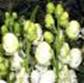
4082001
Аконит Клобучковый Шнивитчен (Aconitum napellus Schneewitchen), высота 40-60 см, цветки снежно-белые неправильной формы, размером до 4 см, собраны в густые кистевидные соцветия до 10 см длиной, расположенные на высоких цветоносах.
400
Амсония (Amsonia)
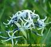
4001001
Амсония Табермонтана (Amsonia tabernaemontana), высота 50-70 см, эффектные нежно-голубые звёздчатые цветки на прямостоячих облиственных цветоносах.
400
Анемона (Anemone)
4002001
Анемона Дубравная Брактиата Пленифлора (Anemone nemorosa Bracteata Pleniflora), высота 10-15 см, ветки белые полумахровые с эффектной юбкой из узких бело-зелёных лепестков. Эффект «ерша» начнёт проявляться на второй-третий год. НОВИНКА!
500
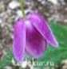
4002003
Анемона Дубравная Фрюхлингфест (Anemone nemorosa Frühlingsfest). В начале цветения цветки раскрытые, бело-розовые с красной обратной стороной. Затем цветки приобретают колокольчатую форму и видно только обратную красную сторону. Цветёт в мае. Эфемероид.
300
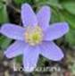
4002004
Анемона Дубравная Ханна Губбай (Anemone nemorosa Hannah Gubbay), высота 15-20 см. Листья с пурпурным оттенком. Цветки крупные, светло-сиреневые. Цветёт в мае. Эфемероид.
500
Арабис (резуха) (Arabis)
4004001
Арабис Альпийский Шнесхаубе (Arabis alpina Shnechaube), высота 5-7 см, образует некрупные низкие куртины, листья блестящие, вечнозелёные, цветки белые.
150
Астильба (Astilbe)
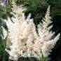
4005001
Астильба Арендса Вайс Глория (Astilbe arendsii Weisse Gloria), 80 см. Цветки белые, собраны в плотные ромбовидные соцветия длиной до 25 см, шириной до 15 см.
350

4005014
Астильба Арендса Глют (Astilbe arendsii Glut (Glow), высота до 80 см. Листья тёмно-зелёные с коричневатым налетом, черешки и жилки красновато-коричневые. Цветки красные, собраны в метельчатое соцветие длиной до 30 см.
350
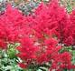
4005002
Астильба Арендса Гранат (Astilbe arendsii Granat), высота 80 см, листья тёмно-зелёные с бронзовым оттенком, соцветия тёмно-малиново-красные, плотные, ромбические.
300
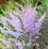
4005003
Астильба Арендса Опал (Astilbe arendsii Opal). Высота - 50 см, во время цветения - 90 см. Нежно-сиреневые метельчатые соцветия. Старый, проверенный временем сорт.
300
4005022
Астильба Арендса Спартан (Astilbe arendsii Spartan), высота до 60 см. Соцветия пирамидальные, красного цвета.
350
4005019
Астильба Арендса Фэйнел (Astilbe arendsii Fanal), высота 50-55 см, гранатово-красные цветки собраны в длинные густые метёлки.
350
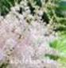
4005024
Астильба Гибридная Майти Пип (Astilbe hybrid Mighty Pip). Один из самых высоких сортов. Высота цветоносов до 1 м. Соцветия ромбовидные, густо-лососево-розовые. Цветоносы пурпурные. Листья тёмно-зелёные.
350
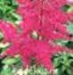
4005025
Астильба Гибридная Майти Ред Куин (Astilbe hybrid Mighty Red Quin). Высота цветоносов до 1,2 м. Цветоносы очень крепкие. Соцветия пурпурно-красные. Листья крупные тёмно-зелёные с оттенками бордового.
350
4005023
Астильба Гибридная Пёпл Рейн (Astilbe hybrid Purple Rain), высота 60см. Соцветие крупное, ромбовидное, плотное и пушистое, яркого насыщенно-пурпурно-лилового цвета. Цветоносы пурпурные.
300
4005015
Астильба Китайская Блэк энд Блу (Astilbe chinensis Black and Blue), высота 80-90 см. Соцветия сиренево-лиловые, очень пушистые. Цветение обильное и продолжительное с конца июня по июль.
350
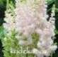
4005007
Астильба Китайская Милк энд Ханей (Astilbe chinensis Milk and Honey). Высота во время цветения 40 см. Пушистое, ромбическое соцветие нежно-серебристо–розового цвета с перламутровым оттенком. Листья блестящие тёмно-зелёные.
350
4005017
Астильба Китайская Пурпуркерце (Astilbe chinensis Purperkerze), высота 90–120 см. Соцветия плотные пурпурно-фиолетовые душистые и яркие длиной 32–40 см. Позднецветущий сорт.
350
Астра многолетняя (Аster)
4006001
Астра Кустарниковая Аннеке (Аster dumosus Anneke), высота 40-50 см, цветки лилово-розовые, полумахровые до 3 см в диаметре, отличается ранним и продолжительным цветением – с августа до октября.
250
4006002
Астра Кустарниковая Вайслендер (Аster dumosus Weislender), высота 20-30 см, белоснежные соцветия-корзинки ярко выделяются на фоне тёмно-зелёных листьев.
250
4006003
Астра Кустарниковая Блю Бёрд (Аster dumosus Blue Berd), высота 25-30 см, цветки сиренево-голубые.
250
4006005
Астра Кустарниковая Старлайт (Аster Dumosus Starlight), высота 40-50 см, махровые ярко-малиновые соцветия, в полном роспуске открывается жёлтая серединка.
300
Астра новобельгийская Бенгале (Аster Novae-belgii Bengale),
350
4006006
Астра Новобельгийская Уинстон Черчиль (Аster novae-belgii Winston S. Churchill), высота 40-50 см, цветки ярко-бордовые.
300
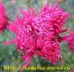
4006007
Астра Новоанглийская Роза Сигел (Аster novae-angliae Rosa Siegel), высота 80-100 см, цветки чашевидные полумахровые ярко-розовые.
350
Астра тонгольская (голубоватая) Вартбургштерн (Aster tongolensis Wartburgstern),
350
Баптисия (Baptisia)
4009001
Баптисия Шоколат Чип (Baptisia Chocolate Chip), высота 60-70 см. Листья трёхраздельные, плотные, красивые, голубовато-зелёные, похожи на листья клевера. Цветки размером 3 см, шоколадно-коричневые с контрастными жёлтыми лепестками, похожи на цветки люпина, собраны в кисти длиной 30-35 см.
600
Барвинок (Vinca)
4010001
Барвинок Малый обычная форма (Vinca minor), вечнозелёное почвопокровное растение с мелкими блестящими листочками, цветки голубые.
100
4010002
Барвинок Малый Атропурпуреа (Vinca minor atropurpurea), зелёные блестящие листья, цветки яркие, пурпурные.
300
4010003
Барвинок Гертруда Джекил (Vinca minor Gertrude Jekyll), листья зелёные, цветки белые. НОВИНКА!
300
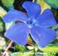
4010004
Барвинок Малый Иллюминейшн (Vinca minor Illumination), листья зелёные с ярко-золотистым центром, цветки голубые. НОВИНКА!
300
4010005
Барвинок Малый Ральф Шугарт (Vinca minor Ralph Shugert), листья зелёные с белой каймой, цветки голубые, крупные.
200
Бруннера (Brunnera)
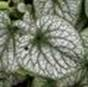
4083001
Бруннера Крупнолистная Александрс Грейт (Brunnera macrophylla Alexander's Great), образует крупную куртину высотой до 40 см. Очень крупные сердцевидные листья, сильно посеребрённые, с контрастными зелёными прожилками и узким зелёным краем. Цветки синие, как у незабудки, собраны в соцветия. Цветёт в мае-июне.
500
Бузульник (Ligularia)
4011004
Бузульник зубчатый Бритт Мари Кроуфорд (Ligularia dentata Britt Marie Crawford), высота во время цветения до 120 см. Крупный сорт с кожистыми, блестящими, пурпурно-шоколадными листьями на фиолетовых черешках. В июле-сентябре на высоких прямых цветоносах распускаются ярко-жёлтые соцветия-корзинки, собранные в рыхлое метельчатое соцветие.
600
Буквица (Betonica)
4012001
Буквица Крупноцветковая суперба (Betonica grandiflora f. Superba), высота до 50 см. Крупные ярко-малиновые цветки собраны в плотные соцветия.
400
Василистник (Thalictrum)
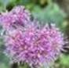
4013006
Василистник Водосборолистный Май Литл Фаворит (Thalictrum Aguilegifolium My Little Favourite), компактный сорт высотой 60-80 см. Цветки в крупных щитковидных метёлках, многочисленные, лилово-розовые. Цветёт продолжительно в июле-августе.
450
Вербена (Verbena)
4096001
Вербена Копьевидная (хастата) Вайт Спайрес (Verbena hastata White Spires). Многолетнее растение высотой до 100 см. Соцветия колосовидные, состоящие из мелких белых цветков. Цветёт с июня по октябрь.
450
Вероника (Veronica)
4016002
Вероника Горечавковая (Veronica gentianoides), высота 30 см, цветки бледно-голубые с тёмно-синими прожилками, собраны в рыхлое колосовидное соцветие, листья ланцетные, кожисты зелёные.
250
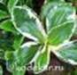
4016005
Вероника Горечавковая Вариегата (Veronica gentianoides Variegata), высота до 30 см. Розеточные листья зелёные с белой каёмочкой. Соцветия колосовидные, рыхлые, состоящие из бледно-голубых цветков до 1 см в диаметре. Зацветает в июне и цветёт в течение 15-20 дней.
350
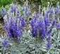
4016004
Вероника Седая Silberteppich (Veronica incana Silberteppich), высота 10-30 см, нижние листья серо-зелёные, образуют плотную розетку, цветки синие, собраны в колосовидное соцветие.
350
Вероникаструм (Veronicastrum)
4017005
Вероникаструм виргинский Купид (Veronicastrum virginicum Cupid), НОВИНКА!
500
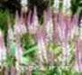
4017003
Вероникаструм Виргинский Фасинейшн (Veronicastrum virginica Fascination), высота до 1 м. Цветки светло-розовые собраны в метельчатые соцветия длиной до 15 см.
450
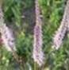
4017004
Вероникаструм Виргинский Эрика (Veronicastrum virginicum Erika), высота 120 см. Красивое сочетание - красные бутоны и сиренево-розовые цветки с тёмными тычинками. Цветки собраны в метельчатые соцветия длиной до 15 см. НОВИНКА!
500
Галантус (Galanthus)
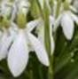
4097001
Галантус (подснежник) Белоснежный (Galanthus nivalis). Цветки белые, поникающие. Внутренние лепестки с зелёным пятном. Диаметр цветков до 3 см. Листья тёмно-зелёные. Цветение обильное и продолжительное в апреле. При оптимальных условиях может цвести около 30 дней. Ароматный.
350
(3 шт.)
Гейхера (Heuchera)
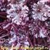
4020006
Гейхера Dark Secret, высота 35-40 см, очень эффектные волнистые пурпурные листья с бронзовым отливом и красной подкладкой, цветки кремовые на пурпурном цветоносе.
300
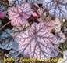
4020015
Гейхера Mars, высота 35-50 см, листья крупные, светло-красновато-серебристые с тёмно-зелёными жилками.
350
4020021
Гейхера Sashay,
300
Гелениум (Helenium)
4092001
Гелениум Ред Джевел (Helenium Red Jewel), высота до 90 см. Цветки насыщенно-красные с оранжевыми оттенками, лепестки с жёлтой каймой. Обильно цветёт с конца июля до конца сентября
300
Гелиопсис (Heliopsis)
4023001
Гелиопсис Подсолнечниковидный Асахи (Heliopsis Helianthoides Asahi), высота 60 см, соцветия-корзинки шарообразные, густо-махровые, яркого золотисто-жёлтого цвета.
400
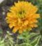
4023006
Гелиопсис Подсолнечниковидный Дабл Санстрак (Heliopsis Helianthoides Double Sunstruck), высота до 40 см. Листья светло-зелёные с ярко-выраженными тёмно-зелёными прожилками. Контрастная окраска листьев может проявляться в течение сезона. Соцветия-корзинки шарообразные, густо-махровые, яркого золотисто-жёлтого цвета.
450
4023002
Гелиопсис Подсолнечниковидный Самма Пинк (Heliopsis Helianthoides Summer Pink), высота 60-70 см, розово-серебристые листья с пурпурно-зелёными прожилками и яркие золотисто-жёлтые соцветия-корзинки с оранжево-красным центром, цветёт с июня по сентябрь.
400
4023005
Гелиопсис Шероховатый Бурнинг Хартс (Heliopsis helianthoides Burning Hearts), высота 50-60 см. Листья и цветоносы цвета тёмного шоколада, не меняют окраску в течение сезона. Соцветия одно-двухрядные, ярко-жёлтые с красным центром. Цветёт обильно и длительно в августе-сентябре.
400
Герань (Geranium)
4024007
Герань Гибридная Азур Раш (Geranium hybrid Azure Rush), высота 20-40 см. Цветки диаметром до 6 см, сине-сиреневые с фиолетовыми прожилками и белым центром. Цветение обильное и продолжительное с июня по октябрь.
450
4024008
Кроваво- красная Пинк Пуф (Geranium Pink Pouffe),
450
4024003
Герань Кроваво-красная Макс Фрей (Geranium sanguineum Max Frei), высота 35-40 см, цветки ярко-розово-малиновые, листья пальчато-рассечённые, осенью красно-оранжевые.
300
4024004
Герань Крупнокорневищная (балканская) Закор (Geranium macrorrhizum Czakor), высота 25-30 см, долгоживущее не создающее проблем ползущее растение, многочисленные пурпурно-розовые цветки на зонтикообразных цветоносах.
350
4024005
Герань Крупнокорневищная (балканская) Спесарт (Geranium macrorrhizum Spessart), высота 25-30 см, долгоживущее не создающее проблем ползущее растение, многочисленные бело-розовые цветки на зонтикообразных цветоносах.
350
4024010
Герань луговая Клауд Найн (Geranium pretense Cloud Nine),
600
4024006
Герань Пятнистая Эспрессо (Geranium maculatum Espresso), высота 40 см, окраска листьев варьируется от коричневато-зелёной до шоколадно-коричневой, цветки сиренево-розовые диаметром около 3 см.
400
Гилления (Gillenia)
4025001
Гилления Трёхлистная (Gillenia trifoliate), высота до 100 см, листья зелёные, тройчатые, осенью приобретают красноватый оттенок, цветки пяти-лепестковые розовато-белые, диаметром до 2,5 см, собраны в рыхлые ажурные метельчатые соцветия.
500
Горец (Persicaria = Polygonum)
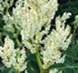
4027002
Горец Изменчивый (Persicaria polymorpha), высота до 2 м, огромные сложные метельчатые соцветия, состоящие из мелких белых цветков, напоминают белое облако. Не расползается!
500
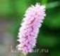
4027001
Горец Змеиный Hohe Tatra (Persicaria bistorta Hohe Tatra), высота до 50 см. Цветки кораллово-розовые, собраны в плотные колосовидные соцветия длиной 6-10 см. Цветёт с мая 80-90 дней. Не агрессивен!
500
Горечавка (Gentiana)
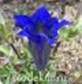
4026002
Горечавка Бесстебельная/Коха (Gentiana acaulis/kochiana). Компактное растение высотой до 10 см. Листья зимующие. Цветки крупные, длиной до 5 см, смотрящие вверх, синие. Цветёт в мае-июне.
700
Горянка (Epimedium)
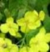
4028005
Горянка Перистая подвид колхидская (Epimedium pinnatum ssp. Colchicum), высота 30-40 см. Цветки жёлтые, без шпорцев, мелкие, размером до 1,5 см, собраны в рыхлое соцветие. Цветёт с апреля по май в течение 10-15 дней.
400
Гравилат (Geum)
4029002
Гравилат Космополитэн (Geum Cosmopolitan),
450
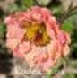
4029006
Гравилат Май Тай (Geum Mai Tai), высота 40-50 см. Цветки абрикосово-персиковые.
400
4029003
Гравилат Притикоаст Пич (Geum Pretticoats Peach), высота до 40 см. Цветки диаметром до 5 см, полумахровые персиковые с небрежными мазками пастельных оттенков розового и оранжевого.
400
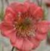
4029004
Гравилат Сальмон Делайт (Geum Salmon Delight), высота до 30 см. Цветки полумахровые, лососево-розовые.
350
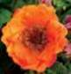
4029005
Гравилат Темпо Оранж (Geum Tempo Orange), высота 30-40 см. Цветки многочисленные махровые от персикового до оранжевого цвета.
350
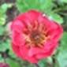
4029001
Гравилат Флеймс оф Пэшн (Geum Flames of Passion), высота до 50 см во время цветения. Полумахровые ярко-красные цветки. Цветёт с конца июня в течение пятидесяти дней. НОВИНКА!
350
Дицентра (разбитое сердце) (Dicentra)
4031003
Дицентра Красивая Аврора (Dicentra formosa Aurora), высота до 30 см, листья мелко раздельные, сизоватые, цветки белые, многочисленные, цветёт длительно.
300
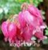
4031004
Дицентра Красивая Кинг оф Хартс (Dicentra formosa King of Hearts), высота до 30 см. Цветки густо-розовые, собраны в кистевидное, дугообразное соцветие. Начинает цвести во второй половине мая и цветёт весь сезон.
350
Додекатеон (Dodecation)
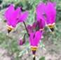
4032001
Додекатеон Средний Квин Виктория (Dodecation meadia Queen Victoria), цветоносы высотой 15-50 см, цветки розовые, диаметром до 3 см, собраны в зонтиковидное соцветие.
350
Иберис (Iberis)
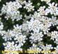
4035001
Иберис Вечнозеленый (Iberis sempervires), высота 15-20 см, образует густые подушковидные заросли, цветки белые в плотных соцветиях, цветёт чрезвычайно обильно.
350
Ирис (Iris)
4036032
Ирис Бородатый Бёртуисл (Iris Barbata Birtwistle), высота 80 см. Кремово-жёлтый парящий центр в обрамлении нижних белых лепестков с ярко-лимонной каймой.
350
4036003
Ирис Бородатый Блэк Драгон (Iris Barbata Black Dragon), высота 70 см, окраска яркая и насыщенная, от светло- сиреневого до тёмно-сиреневого.
300
4036005
Ирис Бородатый Бэст Бэт (Iris barbata Best Bat), высота 70 см, стандарты небесно-голубые, к фалам краски сгущаются до глубокого индиго, фалы – ультрамариновые.
350
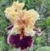
4036035
Ирис Бородатый Декаденс (Iris Barbata Decadence). Сильно гофрированный и кружевной. Стандарты кремово-абрикосовые с бледно-розовым оттенком по центральной прожилке. Фолы светло-сливово-бордовые с кремово-абрикосовой каймой. Бородка мандариновая.
550
4036036
Ирис Бородатый Дельта блюз (Iris Barbata Delta Blues). Цветки чистого лазурного цвета. Фолы необычайно широкие с сильной гофрировкой. Бородка жёлтая с белым кончиком.
450
4036045
Ирис бородатый Лоуизас Сонг (Iris barbata Louisa's Song),
500
4036038
Ирис Бородатый Мистириоз Уэй (Iris Barbata Mysterious Ways). Стандарты очень волнистые, с переходом от светло-жёлто-орехового к серо-фиолетовому. Стайлы шартрезово-жёлтые. Фолы широкие, белые с лимонно-жёлтой каймой и жёлтыми пятнами в основании. Бородка жёлтая.
500
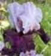
4036041
Ирис Бородатый Прайвет Ай (Iris Barbata Private Eye). Стандарты светло-сиреневые и тёмно-винные фолы. Бородка – почти чёрная.
500
4036046
И. Бородатый Сандеринг Эувейшн (Iris Barbata Thundering Ovation),
450
4036011
Ирис Бородатый Степпинг Аут (Iris Barbata Stepping Out), высота 90 см, белый с контрастной тёмно-фиолетовой штрихованной каймой, бородка горчично-фиолетовая. Гофрированный.
350
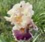
4036042
Ирис Бородатый Трули Викид (Iris Barbata Truly Wicked). Персиково-тёмно-жёлтые стандарты и такая же кайма на розово-фуксиновых фолах с более тёмными прожилками. Бородка мандариново-оранжевая.
500
4036047
Ирис бородатый Утомлённое солнце
400
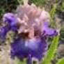
4036029
Ирис Бородатый Флорентайн Силк (Iris Barbata Florentine Silk), высота 100 см, стандарты розово-персиковые с небольшой примесью орхидного цвета. Стайлы персиковые с орхидными прожилками. Фолы лавандовые с розовато-бежевой каймой. Бородка оранжево-персиковая.
550
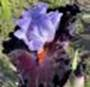
4036028
Ирис Бородатый Фул Фигард (Iris Barbata Full Figured), высота 90 см, белые стандарты и очень широкие гофрированные красно-виноградные фолы, бородка оранжевая.
450
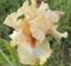
4036043
Ирис Бородатый Чип Фрилс (Iris Barbata Cheap Frills). Стандарты персиково-охристые, более тёмные к краям. Фолы с белым фоном, желтовато-персиковой каймой пликаты и центральной полосой цвета корицы. Бородка оранжево-рыжая.
500
4036013
Ирис Злаковидный (Iris graminea), высота 30 см, листья узкие злаковидные, цветки ярко-голубые.
300
4036014
Ирис карликовый Брайт Вайт / Iris pumila Bright White
350
4036016
Ирис Карликовый Глимин Голд (Iris Pumila Gleaming Gold), высота 20 см, цветок жёлтый с бронзовым центром на нижних лепестках и жёлтой бородкой.
250
4036017
Ирис Карликовый Пьеро (Iris Pumila Pero), высота 20 см, стандарты - белые с зелёным оттенком. Фолы - жёлто-зелёные с каймой цвета стандартов. Бородки - светло-голубые.
250
4036019
Ирис Карликовый Чери Гарден (Iris pumila Chery Garden), высота 30 см, цветок пурпурно-красный с более тёмным пурпурным пятном под крупной синей бородкой.
250
4036020
Ирис Карликовый Шерлок (Iris Pumila Sherlock), высота 25 см, светло-жёлтый с тёмным мазком и красно-белой бородкой.
250
4036048
Ирис мечевидный (Ирис Кемпфера) Алтай (Ir. Ensata ( Iris kaempferi) Алтай),
700
4036049
Ирис сибирский Анкоркед (Iris Sibirica Uncorked),
450
4036022
Ирис Сибирский Империал Опал (Iris sibirica Imperial Opal), высота 80 см, цветок цвета розовой лаванды, крупный махровый.
350
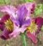
4036025
Ирис Сибирский Мисс Эппл (Iris Sibirica Miss Apple), высота 75 см. Сорт, в котором присутствует больше красных тонов, чем в других сибирских ирисах. Стандарты красно-коричневатые, бархатные. Стайлы красно-фиолетовые. Фолы от тёмно-вишнёвых до лиловато-малиновых с жёлтыми сигналами, покрытыми сеткой пурпурных жилок. Аромат лёгкий, сладкий.
450
4036024
Ирис Сибирский Спарлинг Роуз (Iris sibirica Sparkling Rose), высота - 70 см, цветок классической формы розовато-лиловый с синим окаймлением вокруг бело-жёлтого центра с яркими жилками.
350
4036026
Ирис Сибирский Шугар Раш (Iris Sibirica Sugar Rush), высота 70 см. Стандарты перламутровые, светло-розовые. Фолы смешанных светло-красных и жёлтых оттенков с ярко выраженным жёлтым сигналом. Оттенки на фолах могут быть темнее или светлее в зависимости от погоды. Стайлы перламутровые с синеватой средней прожилкой.
450
Калимерис (Kalimeris)
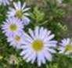
4098001
Калимерис Надрезаннолистный Блю Стар (Kalimeris incisa Blue Star), высота до 120 см. Цветёт некрупными ромашковидными светло-голубыми цветками с ярко-жёлтой серединкой. Цветёт продолжительно с июля по сентябрь.
350
Кандык / Эритрониум (Еrythronium)
4038001
Кандык европейский Пурпл Кинг (Еrythronium denscanis Purple King), листья мраморные с пурпурно-коричневыми пятнами. Цветки фуксийно-розовые с загнутыми лепестками, напоминают цветки цикламена, одиночные, поникшие, размером до 4 см. Цветёт в мае 15-20 дней.
500
4038005
Кандык европейский Вайт Сплендор (Еrythronium denscanis White Splendor)
900
4038006
Кандык европейский Моергей (Еrythronium denscanis Moerheimii)
900

4038003
Кандык Сибирский Сибсир, высота до 30 см, с двумя супротивными пурпурно-коричневыми листьями со светлыми полосами и пятнами. Цветок сиреневый диаметром 5-8 см с отогнутыми листочками околоцветника. Пыльники крупные, ярко-жёлтые.
500
Клематис (Clematis)
3002001
Клематис Борщевиколистный Кассандра (Clematis heracleifolia Cassandra). Прямостоячий травянистый полукустарник высотой 0,5-1,0 м. Цветки ярко-голубые, трубчатые, гиацинтоподобные, длиной 2,5 см, с приятным запахом. Лепестки сильно вывернуты назад. Цветки собраны пучками в пазухах листьев. Цветёт в августе-сентябре.
700

3002002
Клематис Пол Фарджес (Летний Снег) (Paul Farges (Clematis Summer Snow), лиана длиной до 7 м. В кусте 20—35 побегов. Цветки кремовато-белые, диаметром 4-5 см, ароматные, собраны в соцветия по 3-7 цветков. Цветёт обильно и беспрерывно с июля по сентябрь на побегах текущего года. 3 группа обрезки.
500
3002004
Клематис Прямой (Clematis recta), прямостоячее растение высотой 0,8-1,2 см, мелкие раскрытые белые цветки собраны в метельчатые соцветия, листья зелёные, цветение обильное. 3 группа обрезки.
450
3002005
Клематис прямой Атропурпуреа (Clematis recta Atropurpurea)
500
3002003
Клематис Цельнолистный (Clematis integrifolia), прямостоячее растение высотой до 0,6 м. С июня до августа на побегах текущего года появляются своеобразные одиночные пониклые колокольчатые цветки синего цвета с лёгким ароматом.
500
3002007
Клематис Цельнолистный Альба (Clematis integrifolia Alba), прямостоячее растение высотой до 0,6 м. С июня до августа на побегах текущего года появляются своеобразные одиночные пониклые колокольчатые цветки белого цвета с лёгким ароматом.
500

3002008
Клематис Цельнолистный Розеа (Clematis integrifolia Rosea), прямостоячее растение высотой до 0,6 м. С июня до августа на побегах текущего года появляются своеобразные одиночные пониклые колокольчатые цветки розового цвета с лёгким ароматом.
500
Клопогон / Цимицифуга (Cimicifuga)
4039001
Клопогон Ветвистый Брюнет (Cimicifuga ramosa Brunette), высота 180 см, сорт с пурпурными стеблями, тёмными, коричневато-пурпурными листьями и компактными соцветиями длиной до 20 см, с белыми с пурпурным оттенком цветками.
500
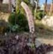
4039003
Клопогон Простой Хиллсайд Блек Бьюти (Cimicifuga simplex Hillside Black Beauty), цветоносы высотой 150 см. Особенность сорта – крупные декоративные тёмно-пурпурные листья, которые сохраняют декоративность весь сезон. Цветки бледно-розовые, в длинных соцветиях.
650
Колокольчик (Campanula)
4040005
Колокольчик скученный Фрея (Campanula glomerata Freya)
350
Кореопсис (Coreopsis)
4042001
Кореопсис Мутовчатый Загреб (Coreopsis verticillata Zagreb), высота 50 см, цветки жёлтые «ромашки», цветение обильное, длительное. Очень декоративные "укропные" листья. Цветёт с середины июля 65-70 дней.
350
4042003
Кореопсис Трёхкрылый или трёхлистный (Coreopsis tripteris). Мощное растение высотой 90-200 см. Листья пальчато-разделённые на три сегмента. Корзинки цветков жёлтые, диаметром 4-5 см, многочисленные.
450
Кровохлёбка (Sanguisorba)
4044002
Кровохлёбка Лекарственная Чоколэйт Типс (Sanguisorba officinalis Chocolate Tips), высота 60-80 см, пышный куст с разветвленными цветоносы с плотными тёмно-пурпурными шишечками-соцветиями.
400
4044004
Кровохлёбка тонколистная Пинк Брашес (Sanguisorba tenuifolia Pink Brushes)
600
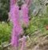
4044003
Кровохлёбка Тупая Лилак Скьюрел (Sanguisorba obtusa Lilac Squirrel), высота цветоносов до 100 см. Соцветия состоят из длинных розово-сиреневых пышных соцветий-серёжек длиной до 10 см. Цветёт с июля по сентябрь.
600
Купальница (Trollius)
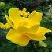
4045002
Купальница Узколепестная (Trollius stenopetalus), высота 60-80 см, цветки крупные, диаметром 8-10 см, полумахровые, восковые, яркого святящегося жёлтого цвета, с кольцом жёлтых тычинок. НОВИНКА!
350
Купена (Polygonatum)
4046001
Купена Многоцветковая вариегатная (Polygonatum multiflorum variegata), высота до 60 см, листья зелёные с бело-кремовой полосой по краю, цветки белые.
350
Лапчатка (Potentilla)
4047005
Лапчатка Трёхзубчатая Нук (Potentilla tridentata Nuuk), высота 10-15 см. . Цветки белые, диаметром 0,8 см, собраны в соцветия. Цветёт в июне-июле.
300
Лиатрис (Liatris)
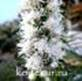
4048001
Лиатрис Колосковая Альба (Liatris spicata Alba), высота до 50 см. Цветочные корзинки белые, собраны в колосовидное соцветие до 35 см длиной. Цветёт в июне-июле 35-40 дней.
300
4048002
Лиатрис Колосковая Кобольт (Liatris spicata Kobolt), высота до 50 см. Цветочные корзинки сиренево-розовые, собраны в колосовидное соцветие до 35 см длиной. Цветёт в июне-июле 35-40 дней.
300
Лилейник (Hemerocallis)

4049003
Лилейник Angel Fairy Tern, Lambertson, 2008 г. Tet, Sev, E, Re, 71/17. Кремовый с красно-фиолетовым глазом и тройной каймой: красно-фиолетовой внутренней и кремовой внешней со сливочно-белыми зубами. Горло зелёное.
1 300
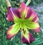
4049004
Лилейник Angel in Oz, Herrington-K., 2008 г. Unusual Form Cascade, Dip, Dor, M, Re, Fra, Diurnal, 84/18. Бургунди красный, огромное зелёное горло.
1 300
4049006
Лилейник Apache Sunrise, Smith-FR, 2008 г. Tet, Sev-Ev, EM, Re, Diurnal. 66/18. Ярко-красно-оранжевый с лёгким жилкованием и гофрированной каймой с золотистой каёмочкой.
1 100
4049007
Лилейник Appliqué, Stamile, 2002 г. Tet, Ev, ME, Re, Diurnal. 76/25. UFO. Лилово-лавандовый с резко очерченной жёлтой аппликацией вокруг зелёного горла.
500
4049010
Лилейник Bas Relief, Pat Stamile, 2000 г., Tet, Sev, E, Fra, 65/17,5. Скульптурный, по центру лепестка рельеф в виде пера, гофрированный. Золотисто-жёлтый с зелёным горлом.
500
4049011
Лилейник Bestseller, Tet, M, Re, 70/14. Лавандовый с сильно гофрированной золотой каймой и зелёным горлом.
500
4049012
Лилейник Beyond New Millenium, Jasinski, 2000 г. Tet, EM, Sev, Fra, 50/18. Кремово-абрикосовый, горло жёлто-оливковое.
400
4049013
Лилейник Big Birds Friend, Gossard, 2003 г. Unusual Form Cascade, Tet, Dor, M, Re, Diurnal, 132/25. Золотисто-жёлтый, огромный, очень обильный.
1 500
4049014
Лилейник Big Red Wagon
2 000
4049016
Лилейник Black Eyed Susan, Stevens D., 1983 г. Tet, Dor, M, 66/14. Жёлтый с красно-коричневым глазом, внутренние лепестки слегка гофрированные.
250
4049017
Лилейник Black Falcon Ritual, Hanson-C., 2005 г. Unusual Form Cascade, Tet, Sev, EM, Diurnal, 97/20. Тёмно-фиолетовый со светло-фиолетовым водяным знаком, шартрезное горло.
1 500
4049018
Лилейник Black Panther, Gossard, 2012 г. УФО, Unusual Form Cascade, Tet, Dor, ML, Re, Fra, Diurnal, 112/24. Тёмно-фиолетовый с чёрным глазом и зелёным горлом.
1 800
4049019
Лилейник Black Stockings, Heemskerk, 2006 г. Tet, Sev, M, Fra, 61/15. Цветки пурпурно-чёрные с зелёным горлом и гофрированным краем.
500
4049022
Лилейник Blue on Blue, Pierce-G., 2015 г. Tet, Sev, EE, Re, Fra, Diurnal, 81/20. Фиолетовый с 15-ти сантиметровым голубовато-лавандовым водяным знаком, большое зелёное горло.
1 100
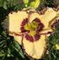
4049020
Лилейник Blueberry King, Trimmer, 2015 г. Tet, Ev, M, Re, Diurnal, 86/16. Цвета слоновой кости со сливовым глазом, двойная фиолетово-золотистая гофрированная кайма, маленькое зелёное горло.
2 100
4049023
Лилейник Boca Grande
1 800
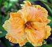
4049024
Лилейник Bonnie Holley, Corbett, 2005 г. Tet, Ev, M, Re, Fra, 75/15. Скульптурный, гофрированный. Красивая форма цветка. Основной цвет персиковый, горло и кайма – жёлтые.
700
4049025
Лилейник Born in California
2 300
4049026
Лилейник Born to be Wild, Pierce-G., 2011 г. Tet, Sev, EM, Re, Diurnal, 81/17. Светло-кремовый с фиолетовым глазом и двойной фиолетовой и шартрезной гофрированной каймой, зелёное горло.
1 400
4049027
Лилейник Boundless Beauty, Stamile, 2005 г. Tet, Sev, M, Re, Diurnal, 71/19. Пастельно-белый с оттенками розового и слоновой кости, широкая золотистая гофрировка "крылья ангела", зелёное горло. Цветки плоские и круглые.
1 800
4049028
Лилейник Bradley Bernard, Reinke, 1996 г. Unusual Form Cascade, Dip, Sev, M, Diurnal, Fra, 97/18. Лилово-фиолетовый с фиолетовым глазом и зелёным горлом.
400
4049029
Лилейник Breath of Compassion, Ansari, 2009 г. Лавандовый с голубым глазом и жёлто-зелёным горлом. Кайма гофрированная, фиолетово-красно-синяя с тонкой белой каёмочкой.
2 800

4049030
Лилейник Buffalo Bill, Salter, 2013 г. Tet, Sev, M, Re, Diurnal, 74/17. Сливочно-бежевый с большим тёмно-красным треугольным глазом, большое жёлто-зелёное горло, слегка гофрированная белая зубчатая кайма.
1 100
4049198
Лилейник Candy Colored Curls, Herr, 2010 г. Unusual Form Cascade. Dip, Dor, M, 104/23. Ярко-красный с тёмно-красным глазом и огромным зелёным горлом.
900
4049034
Лилейник Carved Complexity, Petit, 2008 г. Tet, Sev-Ev, M, Re, Diurnal, 76/18. Кремово-розовый с шикарной золотистой гофрированной каймой и зелёным горлом.
1 000
4049208
Лилейник Shaker
2 100
4049197
Лилейник Changes in Attitude, Hansen-D., 2007 г. Unusual Form QUILLED Crispate (УФО свёрнутая курчавая) Tet, Ev, E, Re, 91/23. Розово-красный с красным глазом и зелёным горлом. Внешние лепестки свернуты в трубочку.
700
4049194
Лилейник Cheese and Wine
500
4049035
Лилейник Cherry Ice Cream Smile, Pierce, 2012 г. Основной цвет - красный, глаз - большой серебристый, горло жёлтое, окантовка жёлтая.
1 400
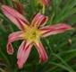
4049037
Лилейник Christmas in Oz, Herrington-K., 2004 г. Dip, Sev-Ev, M, Re, UFO, 91/23. Розовый с красным глазом и зелёным горлом.
800
4049202
Лилейник Christmas Is, Yancey, 1979 г. Насыщенно-красный с большим зелёным горлом.
500
4049038
Лилейник Circle and Stripes, Jasinski, 2002 г. Tet, Sev, M, Fra, 70/17. Цветок тёмно-жёлтого цвета с шоколадным круглым глазом и полосками на нижних лепестках того же цвета. Горло зелёно-жёлтое.
300
4049039
Лилейник Citrina, видовой лилейник из Китая, лимонно-жёлтые цветки оригинальной полузакрытой формы - длинные и вытянутые, длиной до 14 см при диаметре 12 см.
250

4049040
Лилейник Cobalt Rings, Petit, 2012 г. Tet, Sev, M, Re, diurnal, 81/18. Лавандово-розовый, фиолетово-синий аппликационный рисунок глаза, двойная фиолетово-золотистая петельчатая кайма, зелёное горло.
1 100
4049044
Лилейник Cool Runnings, Pierce-G., 2012 г. Tet, Ev, EM, Re, diurnal, 99/17. Насыщенно-розовый с большим водяным знаком, двойной рюшей жёлтого и белого цвета, зелёное горло.
1 100

4049043
Лилейник Cooler than Me, Hansen-D., 2010 г. Unusual Form Crispate-Spatulate, Tet, Ev, EE, Re, diurnal, 76/20. Гвоздично-розовый, жёлтая пузырчатая кайма, большое жёлто-зелёное горло.
2 500
4049047
Лилейник Dance with Somebody, Douglas-H., 2013 г. Unusual Form Cascade. Dip, Dor, E, Re, Diurnal, 74/20. Насыщенно-розовый с большим цвета зеленого лайма горлом, перетекающим на чашелистики. Концы лепестков закручены в локоны и каскадом свешиваются вниз.
2 500
4049049
Лилейник Desert Icicle, Ned Roberts, 1995 г. УФО, Twisted crispate (скрученный курчавый). Dip, Sev, EM, Fra, Noc, 91/20,5. Перламутрово-розовый с большим зелёным горлом.
400
4049050
Лилейник Dizzy Miss Lizzy, Wilkerson, 2003 г. UFO cascade. Tet, Sev, EM, Re, Diurnal, Fra, 74/17. Лавандово-розовый, фуксиевый глаз, зелёное горло.
1 500
4049048
Лилейник Dark Regent
900
4049051
Лилейник Doug Warner, Petit, 2008 г. Tet, Sev- Ev, M, Re, Fra, Diurnal, 58/16,5. Цвета слоновой кости с фиолетовым глазом, широкой двойной гофрировкой (фиолетовой с цветом слоновой кости) и зелёным горлом.
800
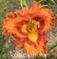
4049199
Лилейник Euphoric, Maryott, 2014 г. Tet, Ev, M, Re, Diurnal, 86/15. Тёмно-оранжевый с ярко-жёлтым аппликационным горлом, большим красным глазом и красной рюшей.
1 800
4049056
Лилейник Exotic Spider, Dip, Dor, M, Fra, 50/18 Спайдер. Лиловый с белым тонким волнистым кантом, горло зеленовато-жёлтое.
300
4049057
Лилейник Exotic Starfish, Gossard, 2013 г. Dip, Dor, M, Re, Diurnal, Fra, 89/23. Лавандово- розовый с огромным сине-фиолетовым глазом, горло ярко-зелёное со звёздчатым рисунком.
1 100
4049059
Лилейник Extinction, Reed, 1996 г. Spider. Dip, Sev, EM, Diurnal, Fra, 91/18. Вишнёво-розовый с зелёным горлом.
400
4049061
Лилейник Fiji, P.Stamile, 2007 г. Tet, Ev, EM, Re, Diurnal, 71/18. Огромный абрикосово-оранжевый с золотистой рюшей, горло зелёное.
900
4049062
Лилейник Finders Keepers, Rogers, 2006 г. Tet, Ev, ME-M, 65/17,5. Сливочно-жёлтый со слабым розоватым оттенком, сильно гофрированная жёлтая кайма шириной 2 см, зелёное горло.
500
4049063
Лилейник Fitzasaurus, Fitzpatrick, 2004 г. UFO cascade. Dip, Sev, ML, Diurnal, 81/23. Ярко-бордово-красный с огромным зелёным горлом.
400
4049064
Лилейник Flamingo Flambeau, Michaels, 2008 г. Spider 4,17:1. Dip, Sev, ML, Diurnal, 74/17. Фуксиевый с большим розовым глазом и кремовыми продольными жилками на лепестках, горло зелёное.
1 100

4049065
Лилейник Forever Redeemed, Carpenter-J., 2003 г. Tet, Dor, EM, Re, Diurnal, Fra, 64/15. Ярко-красный с большим лососево-красным водяным знаком, горло зелёное.
1 100
4049066
Лилейник Free Wheelin, Stamile, 2004 г. Spider, Tet, Ev, EE, Re, Diurnal. 86/23. Кремово-жёлтый с огромным глазом цвета бургундского вина, изумрудно-зелёное горло.
600
4049067
Лилейник Fugitive, Maryott, 2013 г. Tet, Ev, M, Re, Ext, 89/14,5. Оранжевый с огромным треугольным фиолетовым глазом, такого же цвета рюшей и маленьким зелёным горлом.
1 500
4049068
Лилейник Galactic Green, Pierce-G., 2015г. Tet, Sev, EM, Re, Diurnal, 76/21. Фиолетовый с тёмно-фиолетовым глазом и большим зелёным горлом. Плотная фактура лепестков.
1 500
4049069
Лилейник Gentle Shepherd, Yancey, 1980 г. Dip, Sev, M, Re, 70/13. Цветок розовато-белый с алмазным блеском и небольшим светло-зелёным горлышком, лепестки широкие, плотные, волнистые.
300
4049070
Лилейник Golden Child, Harry, 2008 г. Tet, Sev, EM, Re, Diurnal, 71/20,5. Насыщенно-жёлтый с зелёным горлом, гофрированная кайма.
800
4049071
Лилейник Golden Hummer, Petit, 2009 г. Tet, Sev-Ev, E, Re, Diurnal, 64/19. Ярко-золотисто-жёлтый с мандариново-розовым румянцем, золотистая широкая гофрированная кайма, насыщенно-зелёное горло.
1 000
4049073
Лилейник Good Luck, Stamile, 2015 г. Tet, Ev, EM, Re, Fra, Diurnal, 64/18. Розово-красный с большим треугольным красным глазом и треугольным зелёным горлом.
3 500
4049076
Лилейник Great White Dove
1 500
4049074
Лилейник Green Mystique, Stamile, 2002 г. Tet, Ev, EM, Fra, 60/14. Кремово-жёлтый с зелёным горлом и экстремально гофрированной жёлтой каймой.
500
4049075
Лилейник Green Springs, Trimmer, 2014 г. Tet, Ev, E, Re, Diurnal, 71/14. Светло-лавандово-розовый, золотистая гофрированная кайма.
1 500
4049077
Лилейник Hanalei Bay
2 500

4049078
Лилейник Happy Apache, Hansen-D, 2000 г. Tet, Sev-Ev, E, Re, Noc, 61/16. UFO. Красный с цветом шартреза горлом, широкая кайма цвета слоновой кости.
700
4049080
Лилейник Happy Teeth, Trimmer, 2014 г. Tet, Ev, E, Re, 91/14. Фиолетовый с жёлтым горлом, чисто-белая кайма в виде акульих зубов.
2 500
4049207
Лилейник Heart of Manhattan
1 100
4049203
Лилейник Heavenly Angel Ice, Gossard, 2004 г. Белый с зелёно-жёлтым горлом. Края лепестков волнистые.
500
4049193
Лилейник Heavenly Flight Of Angels, Gossard, 2003 г. UFO, Dip, Sev, Noc, Fra, 80/20. Сорт с очень длинными закрученными на концах лепестками светло-желтого цвета с лимонным оттенком и белой каймой по краю. Горло зелёное.
500
4049082
Лилейник Helix, Stamile, 2002 г. Spider, Tet, Ev, EE, Re, 84/23. Бордово-красный с большим зелёным горлом.
500
4049084
Лилейник Hillbilly Heart, Salter, 2001 г. Tet, Sev, ME, Re, 66/14. Кремово-жёлтый с красивым красно-клюквенным глазком и двойной каймой по краю сильно гофрированных лепестков.
500
4049085
Лилейник How Beautiful Heaven Must Be
1 500
4049086
Лилейник Hudson Valley, Peck, 1971 г. Tet Dor L 81/22 Лимонный цветок с тёмно-зелёным горлом с широкими отогнутыми лепестками.
400
4049088
Лилейник Intaglio Image, Maryott, 2008 г. Tet, Ev, M, Re, Fra, 90/15. Тиснённый, гофрированный. Клубничный с жёлтым горлом.
1 100
4049089
Лилейник Jack Be Nimble, Schwarz-B., 2006 г. Tet, Dor, M, Diurnal, Very Fragrant, 102/19. Золотисто-жёлтый с рыжим глазом.
400
4049090
Лилейник Jacqueline Kennedy Onassis, Grace/Smith, 2004 г. Tet, Sev, E, Re, 70/15. Цветок красивой округлой формы. Нежно-розовый с шикарной золотистой гофрированной каймой и зелёным горлом. Восковая текстура лепестков.
900
4049091
Лилейник Jade Ovation, Pierce-G., 2015 г. Tet, Sev, E, Re, Diurnal, Fra, 86/20. Насыщенно-розовый с большим зелёным горлом и водяным знаком. Широкая жёлтая гофра. Плотная текстура лепестков.
3 000
4049092
Лилейник James’s Prissy Kristi, Petit, 2008 г. Tet, Sev, M, Re, Diurnal, 80/20. Огромные цветы лавандово-розового цвета с очень широкой массивной золотисто-зеленоватой гофрированной каймой. Небольшой водяной знак и жёлто-зелёное горло.
1 900
4049093
Лилейник Jane’s Prism, Trimmer-J., 2013 г. Tet, Ev, M, Re, Diurnal, Fra, 71/18. Лавандовый с большим треугольным зелёным горлом и тёмно-сливовый глазом.
1 500
4049094
Лилейник Jerry Hyatt, Hanson-C., 2004 г. Tet, Sev, EM, Diurnal, Fra,69/16. Cиренево-орхидный с фиолетово-синевато-серым водяным знаком и шартрезным горлом. НЕОБЫЧНЫЙ!
1 100
4049095
Лилейник Jessamyn Grace
1 100
4049097
Лилейник John Peat, Petit, 2001 г. Tet, Sev- Ev, M, Re, M, Diurnal, 56/15 Цвета бургундского вина с розовым водяным знаком, экстремально-гофрированной жёлтой каймой и зелёным горлом.
700
4049098
Лилейник Judy Farquhar, Stamile, 2004 г. Tet, Ev, M, Re, Very Fragrant, Diurnal, 86/19. Персиково-розовый, плотная скульптурная фактура, широкая кайма в виде крыльев ангела.
1 500
4049099
Лилейник Judy’s Jewel, Holley-B., 2013 г. Tet, Sev-Ev, EM, Re, Diurnal, Fra, 71/18. Розовый с треугольным белым горлом, золотисто-белая гофрированная кайма, зелёное горло.
1 500
4049100
Лилейник Kick out the Jams, Weston-J., 2006 г. Unusual Form Crispate, Tet, Sev, E, diurnal, Fra, 71/20. Тёмно-лавандовый с лавандовым водяным знаком, жёлтое аппликационное горло.
1 300
4049101
Лилейник Kiss of Paradise, Pierce-G., 2013 г. Tet, Ev, EE, Re, diurnal, 89/19. Кремово-лимонный с калейдоскопным насыщенно-фиолетовым глазом и неоновым зелёным горлом, простирающимся на чашелистики.
1 500
4049103
Лилейник Lady Dragon, Trimmer-J., 2017 г. Лавандово-розовый с большим фиолетовым глазом и зелёным горлом.
3 000
4049104
Лилейник Lasso the Moon, Trimmer, 2015 г. Tet, Ev, EM, Re, diurnal, 71/18. Цвета слоновой кости с розоватым оттенком, экстремально гофрированная кайма.
1 900

4049106
Лилейник Living in Paradise, Grace, 2016 г. Tet, Ev, EM, Re, diurnal, Fra, 76/18. Насыщенно-розово-красный с зелёным треугольным горлом и кремовой каймой.
1 900
4049108
Лилейник Luminous Intentions, Pierce-G., 2015 г. Tet, Ev, EM, Re, diurnal, 86/16. Кремовый с лёгким водяным знаком, переходящим на края лепестков, экстремально гофрированная жёлтая кайма, зелёное горло.
1 900
4049200
Лилейник Made in Dixie, J.Joiner 1994 г. Dip, Sev, ML, Re, Diurnal, 71/20. Огромный розово-жёлтый с зелёным горлом.
1 100
4049109
Лилейник Malibu Barbie, Pierce-G., 2015 г. Tet, Sev, EE, Re, Diurnal, Fra, 76/20. Ярко-розовый с большим зелёным горлом. Алмазное напыление на лепестках. Слегка гофрированная кайма.
3 500
4049110
Лилейник Mama Knows Best, Trimmer, 2017 г. Tet, Sev, EM, Re, diurnal, Very Fragrant, 76/19. Пурпурный с тёмно-фиолетовым сливовым глазом, очень большое зелёное горло.
2 700
4049112
Лилейник McKenzie Agin, Agin, 2007 г. Tet, Dor, M, Re, 60/16,5. Светло-перламутрово-персиковый, золотистая сильно гофрированная кайма.
900
4049113
Лилейник Mississippi Man, Trimmer, 2006 г. Tet, Ev, E, diurnal, Fragrant, 71/17. Насыщенно-розовый с белой аккуратно гофрированной каймой, зелёное горло.
1 500
4049115
Лилейник Monkian, Gossard, 2010 г. Unusual Form Crispate, Tet, Ev, EM, Re, diurnal, Fra, 94/19. Светло-розовый с насыщенно-красным глазом и такого же цвета каймой. Горло зелёное.
1 500
4049117
Лилейник Morpho Butterfly, Gossard, 2011 г. Dip, Dor, M, Re, Diurnal, Fra, 97/24. Тёмно-бордовый с огромным фиолетовым глазом, очень большое ярко-зелёное горло.
400
4049118
Лилейник Moussaka, Tet, Sev, M, Re, 55/15 Сливочно-белый с большим бордовым глазом и такого же цвета гофрированной каймой. Жёлто-зелёное горло.
500
4049119
Лилейник My Heart Belongs to Daddy, Wilkerson, 2009 г. Unusual Form Cascade. Tet, Ev, EM, Re, diurnal, 89/19. Ярко-красный с широкой кремово-розовой каймой и зелёным горлом.
500
4049120
Лилейник Naughty Red, Heemskerk, 2012 г. Tet, Ev, M, Re, Diurnal, 61/15. Насыщенно-красный с жёлтой гофрированной рюшей. Горло зеленовато-жёлтое.
400
4049121
Лилейник Neon Flamingo
1 700
4049122
Лилейник New Clown Face, Klehm, 2003 г. u G.Roy. Dip, Dor, E, 60/14. Цветок жёлто-золотой с крупным ярким каштановым глазком и гофрировкой по краям лепестков. Маленькое зелёное горло.
300
4049124
Лилейник Night Embers, Stamile, 1998 г. Tet, Sev, ME, Re, Fra, 76/13. Цветок махровый, тёмно-красно-бордовый с тонкой бледно-жёлтой каймой и тёмно-жёлтым зевом.
300
4049125
Лилейник Night Whispers, Salter-E.H., 2000 г. Тёмно-пурпурный с золотистым глазом и жёлтой гофрированной каймой.
300
4049126
Лилейник North Wind Dancer, Schaben, 2001 г. Unusual Form Cascade. Dip, Dor, L, Diurnal, Diurnal, 107/19. Лавандово-розовый, горло жёлто-зелёное.
1 500
4049127
Лилейник Open My Eyes, Grace-L., 2001 г. Tet, Ev, E, Diurnal, Fra, 56/13. Оранжевый с тёмно-бордовым глазом и такого же цвета очень широкой, гофрированной каймой. Зелёное горло.
500
4049128
Лилейник Orange Clown, Goldner-Webster, 2007 г. Unusual Form Crispate, Tet, Sev, L, Diurnal, Fra, 81/23. Оранжевый, ярко-оранжевый глаз, ярко-жёлто-зелёное горло.
1 900
4049129
Лилейник Pagans Ritual, Carr, 2000 г. Tet, Ev, M, 62/13. Цветок ярко-пурпурный, гофрированная жёлтая кайма, зелёное горло.
300
4049132
Лилейник Paul’s Eye, Hansen-D., 2008 г. Плоский, круглый, розовато-бежевый с треугольным синим ободком вокруг зелёного горла и вишнёво-бежевой каймой.
800

4049133
Лилейник Persian Ruby, Trimmer, 1998 г. Tet, Dor, EM, Diurnal, 76/20. Огромный тёмно-рубиново-красный, бархатистые лепестки, зелёное горло. Образует 30 бутонов, 3 ветви.
900
4049134
Лилейник Picasso’s Intrigue
3 500
4049136
Лилейник Primal Scream, Hanson 1994 г. Tet, Dor, M, 85/19. UFO. Цветок паукообразной формы ярко-апельсинового цвета.
450
4049204
Лилейник Purple Peace
900
4049138
Лилейник Queen of Green, Trimmer, 2014 г. Tet, Ev, EM, Re, diurnal, 102/23. Огромная розовая призма с большим треугольным красным глазом вокруг зелёного горла.
2 500
4049139
Лилейник Raspberry Frost, Trimmer, 2012 г. Цвета слоновой кости с широкой малиновой каймой, переходящей в жёлтую окантовку, горло зелёно-желтое. Без глаза.
2 500

4049140
Лилейник Red Bull, Stamile-Pierce, 2012 г. Tet, Ev, ME, Re, 110/16,5. Насыщенно-красный, шикарная гофрировка с золотистой окантовкой, зелёное горло.
2 300
4049141
Лилейник Red Suspenders, Webster, 1990 г. UFO. Tet, Dor, M, 81/28. Крупный ярко-красный с жёлтым горлом.
700
4049205
Лилейник Return to Camelot
4 500
4049144
Лилейник Rolling Raven, Stamile P., 2008 г. Spider ratio 4.3:1. Tet, Ev EM, Re, Diurnal, раннее утреннее открытие (Early Morning Opener - EMO). Очень тёмный красно-чёрный с жёлто-зелёным горлом.
700
4049145
Лилейник Royal Celebration, Trimmer, 1999 г. Spider. Tet, Ev, EM, Re, Diurnal, 97/30. Очень крупный. Пурпурно-фиолетовый с ярким громадным жёлто-зелёным горлом. Длинные лепестки закручиваются по спирали, образуя гирлянды.
400
4049146
Лилейник Royal Extravaganza, Carpenter-J., 2009 г. Tet, Ev, M, Re, Diurnal, Fra, 69/16,5. Пурпурный с серебристым водяным знаком и большим зелёным горлом.
1 500
4049147
Лилейник Ruby spider, Stamile, 1991 г. UFO. Tet, Dor, E, 86/23. Очень крупный, яркий, насыщенно-красный спайдер с большим ярко-жёлто-оранжевым горлом.
800
4049148
Лилейник Ruffled Prism, Stamile, 2015 г. Tet, Sev, E, Re, Diurnal, Fra, 81/13. Лавандово-розовый с большим треугольным фиолетовым глазом и треугольным зелёным горлом.
2 900
4049149
Лилейник Russian temple, Petit 2007. Tet, Sev, M, 62/14. Оранжевый цветок с большой треугольной красной глазной зоной и красной, шикарно гофрированной окантовкой с жёлтой каймой. Горло светло-жёлтое.
800
4049150
Лилейник Saber Tooth Tiger, Gossard, 2005 г. Unusual Form Cascade. Tet, Dor, ML, Diurnal, 81/22. Жёлто-оранжевый с более насыщенным оранжевым глазом, жёлтой каймой в виде акульих зубов, жёлто-зелёное горло.
900

4049152
Лилейник Sapphire Summer, Trimmer, 2013 г. Tet, Ev, M, Re, Diurnal, Fra, 86/15. Розовый с огромным фиолетовым глазом и жёлтым горлом. Гофрированная двойная фиолетово-жёлтая кайма. Плотная текстура лепестков.
2 100
4049153
Лилейник Schnickel Fritz, Kirchhoff, 1996 г. Dip, Dor. ME, Re, 40/13. Бордюрный махровый "белый" сорт, лепестки плотные с волнистыми краями, бело-кремовые с золотистым горлом.
400
4049154
Лилейник Sense of Self, Petit-Goff, 2015 г. Tet, Sev, E, Re, Diurnal, 91/22. Огромные цветки светло-розового цвета, зелёное горло, массивная экстремально-гофрированная кремово-жёлтая кайма.
2 100
4049155
Лилейник Sergeant Major, Trimmer, 2003 г. Spider. Tet, Sev, EM, Re, Diurnal, 112/28. Красный с большим зелёным горлом.
700
4049200
Лилейник Skeleton Man, Roberts-N., 200 г. Spider 4.80:1. Dip, Dor, M, Diurnal, 81/19. Тёмно-бордовый с лёгкой жёлтой средней жилкой и маленьким жёлто-зелёным горлом.
700
4049156
Лилейник Smiling Cobra
4 500

4049157
Лилейник Smoke Scream, Gossard, 2004 г. Unusual Form Crispate. Dip, Dor, M, Diurnal, 107/17. Фиолетовый с тёмно-фиолетовым глазом, бело-зелёное горло.
1 200
4049158
Лилейник Snufalufagus, Stamile, 2002 г. UFO. Tet, Ev, EE, Re, Diurnal, Fra, 94/22. Орхидно-розовый с фиолетовым глазом и зелёным горлом.
1 100
4049195
Лилейник Spinnaker, Stamile, 2004 г. Spider 4.45:1. Tet, Sev, EE, Re, Diurnal, Fra, 107/23. Кремово-розовый паук.
1 100
4049159
Лилейник Spinny Sea Urchin, Stamile, 2003 г. Tet, Sev, ME, Re, 69/14. Плоский фиолетово-лавандовый цветок с сиреневым глазом и золотистой каймой в виде акульих зубов.
700
4049160
Лилейник Splash Dance, Stamile, 2016 г. Tet, Ev, EM, Re, Diurnal, Fra, 74/23. Розовый с огромным тёмно-фиолетовым призматическим глазом и большим треугольным зелёным горлом.
3 500
4049161
Лилейник Split Review, Stamile, 2015 г. Tet, Dor, EM, Re, Diurnal, Fra, 56/17. Лавандово-розовый с большим треугольным чёрным глазом, контрастными белыми полосами вдоль лепестков и светлыми пятнами у оснований чашелистников.
3 200
4049196
Лилейник Spotted Sandpiper, Lambertson, 2015 г. Tet, Ev, E, Re, Diurnal, 102/14. Лавандовый с крапинками цвета фуксии, глаз и кайма серо-голубые и цвета фуксии, зелёное горло.
1 900

4049166
Лилейник Supermodel, Gossard, 2008 г. Тёмно-бордово-фиолетовый с огромным розовым водяным глазом и зелёным горлом.
1 000
4049167
Лилейник Swallowtail Summer, Trimmer-J., 2013 г. Tet, Ev, EM, Re, Diurnal, 81/28. Лавандовый с большим сливовым глазом. Светлая срединная линия на внутренних лепестках. Жёлто-зелёное горло.
900
4049169
Лилейник Sweet Isabela, Brooker-G, 2005 г. Tet, Sev, ML, Diurnal, 86/15. Розово-красный с большим белым водяным знаком, горло светло-зелёное.
2 300
4049173
Лилейник The Blessing of Freedom, Grace-L., 2014 г. Tet, Ev, EM, Re, Very Fragrant, Noc, 71/15. Насыщенно-красный, контрастирующий с розовым глазом водяного знака и золотистой каймой.
1 900
4049174
Лилейник The Fabulous Anne McWilliams, Salter, 2013 г. Жёлтый с экстремально гофрированной широкой каймой и маленьким зелёным горлом.
1 100
4049206
Лилейник Thin Man
1 500

4049172
Лилейник Time Stopper, Gossard, 2006 г. Dip, Dor, EM, Diurnal, 84/18. Бордово-фиолетовый с более тёмным большим глазом. Горло большое зелёное. Наружные лепестки - кремово-белые с тёмно-бордовой каймой и узкой белой кромкой.
1 500
4049175
Лилейник Total Chaos, Maryott, 2016 г. Unusual Form Crispate, Tet, Sev, M, Re, Diurnal, 61/15. Светло-кремовый с большим контрастным тёмно-фиолетовым глазом копьевидной формы, расширенное кремово-жёлтое аппликационное горло.
4 200
4049178
Лилейник Turn Up The Volume, Corbett, 2006 г. Tet, Ev, EM, Re, Ext, Fra, 66/18. Светло-оранжевый с красно-оранжевым глазом и двойной красно-оранжевой рюшей. Горло жёлтое.
900
4049179
Лилейник Two Steps Forward, Pierce-G., 2016 г. Tet, Ev, EM, Re, Diurnal, Fra, 114/19. Фиолетовый, зелёное горло, золотисто-белая гофрированная кайма «крылья ангела».
4 500
4049180
Лилейник Ultimate Design, Maryott, 2015 г. Tet, Ev, EM, Re, Diurnal, 69/15. Кремовый с малиновым глазом и такого же цвета экстремально гофрированной каймой шириной 10 мм.
3 500
4049181
Лилейник Ultraviolet Mood, контрастный, хорошо гофрированный, ярко-лавандово-фиолетовый цветок с эффектной резко очерченной молочно-кремовой аппликацией вокруг зелёного горла.
500
4049182
Лилейник Velvet Throne, Petit, 2009 г. Tet, Sev, M, Re, Diurnal, 71/18. Бархатисто-рубиновый с лёгким водяным знаком, гофрированной каймой с белой каёмочкой и глубоким золотистым горлом.
1 700
4049184
Лилейник Violet Valentine, Trimmer, 2015 г. Tet, Ev, EE, Re, Diurnal, Very Fragrant, 76/17. Лавандово-лиловый с очень большим сливовым глазом, горло жёлто-зелёное. Сливовая окантовка.
3 100
4049185
Лилейник Webster’s Pink Wonder, Webster-Cobb, 2003 г. Огромный! Светло-розовый с зелёным горлом.
2 500
4049186
Лилейник White Eyes Pink Dragon, Gossard, 2006 г. Unusual Form Crispate, Tet, Dor, M, Re, Diurnal, Fra, 97/22. Розовый с большим белым водяным знаком и зелёным горлом. Наружные лепестки закручены, а внутренние - с прищипнутыми и опущенными вниз кончиками.
2 300
4049189
Лилейник Willa Mae Thornton, Stamile, 2009 г. Tet, Sev, E, Re, Diurnal, Early Morning Opener – EMO, 80/19. Светло-кремово-жёлтый с огромным цитрон-зелёным горлом. Красивая форма с широкими перекрывающимися лепестками, отличная гофрировка и плотная фактура лепестков.
900
4049191
Лилейник Wonder of It All, Carr, 2005 г. Tet, Dor, E, Re, Diurnal, 69/14,5. Светло-сиреневый с экстремально гофрированной широкой жёлтой каймой. Горло зелёное.
700
Лук (Allium)
4050006
Лук Розеум (Allium Roseum), высота 25-30 см. Цветки звёздчатые, сиренево-розовые с бордовой прожилкой по середине каждого лепестка и ярко-жёлтыми пыльниками. Собраны в рыхлые шаровидные соцветия по 15-20 штук. Цветёт в мае-июне.
250
(3 луковки)
4050002
Лук Хорошенький (Allium carinatum), цветонос высотой до 50 см, цветки интенсивно-розовые, мелкие, колокольчатые, поникают на длинных тонких цветоножках.
250
(3 луковки)
Лютик (Ranunculus)
4094001
Лютик Едкий (аконитолистный) Голд Роуз (Ranunculus acris Gold Rose), высота 30-50 см. Цветки густомахровые, ярко-жёлтые. Распускаясь, они напоминают миниатюрные розы.
350
Молочай (Euphorbia)
Молочай многоцветный (Euphorbia polychrome),
300
Морозник (Нelleborus)
4099002
Морозник Восточный Фрозен Свен (Нelleborus orientalis Frozen Sven). Цветки простые, чашевидные белые с пурпурными прожилками, пурпурно-розовой каймой и белыми тычинками.
1 200
Мукдения или Клёнолистник (Mukdenia или Aceriphyllum)
4056001
Мукдения России Карасуба (Mukdenia rossii Karasuba), высота 15-30 см, листья крупные, зубчатые, по форме напоминают кленовые, весной - зелёные, летом - бронзово-зелёные, а осенью - листья малиново-красные с зелёным центром. Цветёт в апреле до появления листьев, густые коротко ветвистые метёлки бело-кремовых цветков диаметром 0,5 см.
300
Папоротники
5003001
Щитовник Мужской Криспа Кристата (Dryopteris filix-mas Crispa Cristata), высота 10 см, карликовый сорт с сильно сближёнными, перекрывающимися долями листа, на кончиках вайи гребешки и сегменты с завитками.
700
Пенстемон (Penstemon)
4060003
Пенстемон Гибридный Дакота Бургунди (Penstemon hybrids Dakota Burgundy), высота до 50 см. Сорт более компактный, чем «Dark Towers». Очень эффектные пурпурно-чёрные листья, сохраняют свой цвет в течение лета при посадке на солнечном месте. Цветки трубчатые цвета лаванды, собраны в метельчатое соцветие длиной до 15 см. Цветёт в июне-июле.
400
Печёночница благородная (Hepatica nobilis)
4061003
Печёночница Бело-голубая. Высота 10-15 см, листья кожистые, цветёт до отрастания листьев светло-голубыми цветками, диаметром 2 см.
500
4061001
Печёночница Видовая. Высота 10-15 см, листья кожистые, цветёт до отрастания листьев голубыми цветками, диаметром 2 см.
200
4061004
Печёночница Пасхальный подарок. Высота 10-15 см. Цветки синие с белыми кончиками лепестков.
500
Пион видовой / Paeonia vulgaris
4062006
Пион лекарственный Альба Плена (Paeonia officinalis Alba Plena), высота 90 см, чисто-белый диаметром 13 см, махровый шаровидный.
700
4062026
Пион тонколистный (воронец) (Paeonia tenuifolia)
2 100
4062027
Пион уклоняющийся (марьин корень) (Paeonia anomala),
1 700
Пион гибридный (Paeonia hybrids)
4062001
Пион ИТО-гибрид Бартцелла (Paeonia Iton hybrids Bartzella),
1 900
4062005
Пион Генри Бокстос (Paeonia Henry Bockstoce),
1 500
4062021
Пион Канари Бриллиантс (Paeonia Canary Brilliants), ИТО-гибрид (Iton hybrids). Цветок полумахровый диаметром до 20 см, вначале светло-бежевый, затем мягкого жёлтого цвета. Основания лепестков имеют нежно-розовый оттенок.
2 300
4062003
Пион Команд Перформанс (Paeonia Command Performance), высота 80 см. Огромные цветки диаметром до 23 см. Бутоны массивные. Цветки махровые, бомбовидные, ярко-пурпурно-красного цвета.
1 100
4062022
Пион Корал Суприм (Paeonia Coral Supreme), высота до 100 см. Цветки полумахровые, крупные, диаметром до 18 см, лососево-розовые со светло-жёлтым центром. Ароматный. Ранний.
1 200
4062024
Пион Пинк Гавайан Корал (Paeonia Pink Hawaiian Coral),
1 200
Пион молочноцветковый (Paeonia lactiflora)
4062023
Пион Вайт Кэп (Paeonia White Cap), высота 60 см. Диаметр цветка 20 см. Японский тип цветка ближе к анемоновидным. Цветки тёмно-розовые с шапочкой светло-жёлтых, почти белых стаминодий. Приятный аромат.
1 800
4062028
Пион Бу Ти / Paeonia Bu Te,
1 300
700
4062025
Пион Джакорма (Paeonia Jacorma)
900
4062009
Пион Канзас (Paeonia Kansas), высота 90 см, цветки диаметром до 20 см, махровые розовидные, ярко-красного цвета с сиреневым отливом.
800
4062011
Пион Мадес Чойс (Paeonia Mother’s Choice), высота 70 см, цветки диаметром до 18 см, махровые розовидные в начале цветения – нежно-розовые, затем – белые с кремоватым оттенком.
1 200
4062012
Пион Расбери Сандей (Paeonia Raspberry Sundae), высота 70 см, цветки диаметром до 18 см, махровые шаровидные, на розовом блюдце горка кремовых лепестков с малиновыми брызгами на кончиках.
1 000
4062013
Пион Сара Бернар (Paeonia Sarah Bernhard), высота до 110 см, плотный розово – сиреневый, с более светлыми краями лепестков. Густомахровый. Диаметр цветка до 20 см.
900
Посконник (Eupatorium)
4063002
Посконник Пятнистый Пурпл Блаш (Eupatorium maculatum Purple Blush), высота 180-200 см, листья зубчатые морщинистые пурпурно-зелёные, цветки яркие, розово–пурпурные мелкие в крупных пушистых многочисленных корзинках.
400
Примула (Primula)
4064065
Примула зибольда Кипень
500
4064067
Примула зибольда Лиловая мантия
500
4064019
Примула зибольда Милашка
500
4064017
Примула зибольда Облако
500
4064064
Примула зибольда Парча
500
4064066
Примула зибольда Селянка
500
4064068
Примула зибольда Старушка-веселушка
500
4064063
Примула зибольда Стрекоза
500
4064011
Примула зибольда Флирт
500
4064008
Примула зибольда Cashima
900
4064075
Примула ушковая Вечерок
500
4064019
Примула Ушковая Капучино, цветки простые цвета кофейного напитка капучино. Центр белый с небольшой фариной.
500
4064059
Примула Ушковая Каштанка, цветки простые жёлто-горчичного цвета. Центр бело-жёлтый с небольшой фариной.
400

4064020
Примула Ушковая Крем-брюле, цветки простые цвета мороженого. Соцветие крупное, плотное.
400
4064052
Примула Ушковая Кумач, цветки простые кумачового цвета. Центр жёлтый с фариной.
400
4064070
Примула ушковая Лазоревая
500
4064057
Примула Ушковая Маркиза, цветки простые тёмно-малиновые, центр жёлтый с фариной.
400
4064040
Примула Ушковая Озарение, цветки простые лиловые со светлой каймой по краям лепестков. Цветёт обильно и продолжительно в мае и повторно в августе-сентябре.
350
4064048
Примула ушковая Branston (Primula auricula Branston)
900
4064047
Примула ушковая Cocoa (Primula auricula Cocoa)
900
4064026
Примула Ушковая Crimson Glow (Primula auricula Crimson Glow), высота 20 см, листья серо-зелёные, цветки густомахровые, тёмно-бордовые, основание каждого лепестка жёлтое.
450
4064046
Примула Ушковая Gala (Primula auricula Gala), высота 20 см, листья серо-зелёные, цветки густомахровые, пурпурные.
900
4064062
Примула Ушковая Forest Lemon (Primula auricula Forest Lemon), цветки гофрированные, густомахровые, лимонно–жёлтые с легким ароматом. Диаметр 3–4 см. Цветки собраны в соцветия–зонтики по 5–20 штук на упругих цветоносах высотой 25 см.
600
4064031
Примула Ушковая Xaver (Primula auricula Xaver), высота 20 см, листья серо-зелёные, цветки махровые, лиловые, похожие на розочки.
400
4064036
Примула Юлии Ванда Томато Ред (Primula juliae Wanda Tomato Red), высота 10-15 см. Цветки диаметром до 5 см, оранжево-красные с жёлтым глазком, одиночные, возвышаются на длинных черешках. Лепестки цветков с характерной глубокой выемкой. Цветение начинается в апреле, когда еще не развернулись листья, и продолжается до середины-конца мая. Осенью может зацвести повторно.
300
Прострел (Pulsatilla)
4065001
Прострел Обыкновенный смесь окрасок (vulgaris mix), высота 20-30 см, образует розетку ажурных листьев высотой 20-30 см, цветки крупные, колокольчатые, цветёт в апреле-мае, цветки белые, малиновые, сиреневые, розовые или фиолетово-пурпурные.
350
Сисюринхий (Sisyrinchium)
4088001
Сисюринхий Узколистый (Sisyrinchium angustifolium), высота до 20 см. Стебли заканчиваются соцветиями по 1-6 синих цветков диаметром до 2 см с жёлто-оранжевым центром. В день раскрывается всегда один цветок, который вечером увядает, а на следующий день расцветает новый. Массовое цветение в мае-июне. Одиночные цветки появляются до конца сезона.
250
Солидаго (золотарник) (Solidago)
4070001
Солидаго Гибридный Лойсдер Кроун (Solidago hybrida Loysder Crown), высота до 50 см, цветки мелкие нежно-лимонно-жёлтые, собраны в крупные, пушистые, сложные метельчатые, соцветия, образующие шапку.
350
4070002
Солидаго Гибридный Страхленкрон (Solidago hybrida Strahlenkrone), высота до 100 см, цветки золотисто-жёлтые, собранные в кистевидные соцветия на верхушках побегов.
300
Тимьян (Thymus)
4073002
Тимьян Обыкновенный (Thymus Vulgaris), высота 20-25 см, рыхлый кустик, цветки сиреневые.
200
4073003
Тимьян Ползучий Минор (Thymus serpyllum Minor), высота 3-5 см, листья зелёные, опушённые, цветки сиреневые.
250
Тысячелистник (Achillea)
4075005
Тысячелистник Таволговый Паркес Вариету (Achillea filipendulina Parker's Variety), высота 90-100см. Соцветия ярко-жёлтые, плоские щитковидные, крупные, диаметром до 15см. Цветёт продолжительно с июля до конца августа.
500
Фиалка (Viola)
4077001
Фиалка Сестринская ф. альбифлора (Viola sororia f. albiflora), высота 15-20 см, формирует низкий плотный ковёр из широких сердцевидных листьев, обильно и продолжительно цветёт весной крупными белыми цветками размером до 5 см.
100
Флокс (Phlox)
Флокс гладкий (каролинский) (Phlox glaberrima (Carolina)
4078001
Флокс гладкий Билл Бейкер (Phlox glaberrima Bill Baker), высота 40-60 см. Цветки звёздообразные, розовые со светло-розовым глазком, ароматные, собраны в небольшие метёлки. Цветёт очень продолжительно с апреля по июнь.
400
Флокс Дугласа (Phlox douglasii)

4078156
Флокс Дугласа Наполеон (Phlox douglasii Napoleon), цветки округлой формы, бело-розовые, собраны в головки по 1-3 шт. Цветёт обильно в мае-июне. Похож на флокс шиловидный.
500
4078218
Флокс дугласа Ред Адмирал / Phlox douglasii Red Admiral
500
4078002
Флокс Дугласа Цыганская кровь (Phlox douglasii Zigeuner Blut), высота 5-10 см, цветки пламенеющего ярко-красного цвета, звёздчатой формы, собраны в головки по 1-3 шт. Похож на флокс шиловидный.
400
Флокс метельчатый (Phlox Paniculata) российской селекции
4078004
Флокс метельчатый Автограф, Морозова Г.А. 4,0/60/С, светло-малиново-розового тона, в центре белое высветление и малиновый глазок, темно-розовая штриховка по всему полю лепестка.
300
4078170
Флокс метельчатый Алексей Ленский, Е.А.Константинова, 2010 г. 3,8-4,0/60-70/С. Тёмно-фиолетовый центр венчика постепенно неравномерно расплывается к краям. Белые тычинки контрастируют с тёмно-фиолетовым фоном.
500
4078148
Флокс метельчатый Алые паруса, Сурикова В.Я., 2013 г., 4,0-4,2/75-80/С. Ярко-красный цветок с малиновым контрастным кольцом, не выгорает, не портится от дождя и росы. Соцветие широко цилиндрическое, разветвленное, напоминает форму паруса.
400
4078193
Флокс метельчатый Амазонка, Егорова В.И., 4,6-4,8/70/С-СП. Насыщенного яркого красно-малинового цвета с еще более густым центром, вокруг которого оранжевое посветление. Лепестки волнистые.
500
4078005
Флокс метельчатый Анна Каренина, Константинова Е.А., 2003 г. 4,2/80/С. Густая коричневато-серебристая дымка по насыщенному розово-красному полю лепестков, изнанка серебристая. Яркий рубиновый глазок.
400
4078006
Флокс метельчатый Анфиса, Борисова В.Г., 2016 г. 4,0/60/С. Многочисленные сиреневые звёздчатые цветки собраны в крупные соцветия округлой формы.
350
4078007
Флокс метельчатый Аня Гаганова
400
4078008
Флокс метельчатый Ариадна, Теплова Н.Л., 2,5/100/С. Цветок звёздчатой формы, молочно-розовый с тонким белым колечком. Обратная сторона лепестков бело-розовая.
400
4078171
Флокс метельчатый Архангел, Кудрявцева, О.К., 2008 г. 4,0-4,5/90-120/С. Считается идеалом белого флокса! Цветок белоснежный с изящной зеленоватой горловиной трубки. Бутоны чисто-белые. Соцветия большие, набитые, красивой формы.
500
4078194
Флокс метельчатый Аэробика, Сурикова В.Я., 2014. 3,8-4,0/100/С. Половина лепестка белая с сиреневыми разводами, половина - сиренево-малиновая, в центре тёмная звезда сливового цвета.
500
4078010
Флокс метельчатый Белый парус
350
4078149
Флокс метельчатый Беспечный Ангел, Константинова Н.Ю., 2016 г., 4,5-4,7/85-90/С. Цветок колесовидной формы, нежного оттенка лаванды, с большой белой звездой в центре.
450
4078196
Флокс метельчатый Благовест, Сурикова В.Я., 2014 г. 4,5-4,8/80-90/С. Цветок в начале роспуска тёплого кораллово-розового цвета, позднее светлеет, в центре малиновое колечко.
500
4078012
Флокс метельчатый Буратино, Сурикова В.Я., 2013 г. 2,0-2,2/50/С. Мелкоцветковый. Цветок розовый с малиновыми вкраплениями и пятнами по кончикам лепестков, оранжевыми разводами и ярким малиновым колечком. Соцветие плоское, ветвистое, густое и плотное.
500
4078172
Флокс метельчатый Быть может, Жигалина Т. 3,5-4,0/80/С. Светло-сиреневый с тёмно-лиловыми тенями. Соцветие округлое, плотное.
400
4078014
Флокс метельчатый Вальс
400
4078015
Флокс метельчатый Василиса, Г.В. и И.Н. Кругловы, 2007 г. 3,5/100/С. Цветок очень яркий, густо-насыщенно-розового тона в центре, окраска постепенно светлеет к краям лепестков, до белой тонкой окантовки.
400
4078197
Флокс метельчатый Вербное воскресенье, Ю.Б. Марковский. Цветки необычного холодного оттенка.
450
4078150
Флокс метельчатый Вечера на хуторе, Константинова Н.Ю., 2008 г. 4,0-4,2/75-80/С. Пурпурно-лиловый с беловатым размытым кольцом в центре. Цветок колесовидной формы. При вечернем освещении от сиренево-синего до цвета индиго.
450
4078198
Флокс метельчатый Вечерняя Гжель, В.В.Корчагин, В.Г.Борисова, 2019 г. 4,0/85/Р. Бутоны и трубки венчиков фиолетовые. Лепестки фиолетовые, вечером тёмно-синие с белым краем, со временем светлеют. Пурпурный глазок. От известного сорта «Гжель» Константиновой Е.А. отличается более контрастной окраской.
400
4078220
Флокс метельчатый Виктор победитель
450
4078016
Флокс метельчатый Владимир
400
4078151
Флокс метельчатый Воспоминание, М.И. Сидина, 2009 г. 3,8-4,0/70/С. Цветки белые с яркими голубовато-лиловыми мазками по краю лепестков.
400
4078128
Флокс метельчатый Вуаль Поздняя, Е.А. Константинова, 2008 г. 2,5/65-70/СП. Сорт отмечен наградами на отечественных и международных выставках! Малиновый с размытым тёмным центром и светлой подкладкой лепестков. Когда флокс зацветает, соцветие выглядит совершенно обычным. Но, по мере цветения, открывается множество новых цветков, и через месяц оно становится настолько плотным, что не всем цветкам удаётся полностью раскрыться.
450
4078017
Флокс метельчатый Гений, В.А. Маслов, 2017 год. 60-80/С. Необычный флокс. Лепестки сильно рассечённые, волнистые, длиной 2,5-3 см, сиренево-голубые, вечером более синие. Соцветие напоминает облачко и состоит из 40-50 цветков.
450
4078199
Флокс метельчатый Герда, Сурикова В.Я., 2010 г. 3,5/90/СП. Нежно-розовый с большим лучистым белым центром и малиновым колечком.
450

4078129
Флокс метельчатый Герман, Борисова В.Г., 4,5/90/С. Белый с фиолетовыми тенями, лепестки плотные, сильно перекрываются. Соцветия пышные, куст прочный.
400
4078018
Флокс метельчатый Гжель, Константинова Е.А., 2003 г. 4,2/100/СР. Бело-синий: половина лепестка белая, половина – синяя. Более тёмный глазок. Соцветие округло-коническое, плотное.
350
4078200
Флокс метельчатый Гжель Макси, В.В. Корчагин, В.Г. Борисова, 2012 г. 4,8/75/С. Белый с синими тенями, такой же, как «Гжель» Елены Константиновой, но цветки более крупные.
400
4078201
Флокс метельчатый Голубая гортензия, В.Г. Борисова. 4,2-4,5/70-80/С. Светло-сиренево-голубой с посветлениями, трубки и бутоны лиловые. Вечером голубой. Цветок звёздчатый, лепестки не соприкасаются.
450
4078221
Флокс метельчатый Голубая лагуна
400
4078222
Метельчатый Голубой алмаз
500
4078152
Флокс метельчатый Голубые кристаллы, В.В. Корчагин, В.Г. Борисова, 2019 г. 4,5/80-90/Р. Сиренево-синий с большим лучистым белым центром. Вечером синеет.
450
4078130
Флокс метельчатый Гордость России, Репрев Ю.А., 2010 г., 4,5/100/С. Днём голубовато-сиреневый с небольшой, тонкой, светлой звёздочкой. В сумерках светло-синий - чистый, очень красивый цвет. Характерная форма цветка с разделёнными и загнутыми лепестками.
450
4078153
Флокс метельчатый Горислав, В.В.Корчагин, В.Г.Борисова, 2013 г. 3,4-4,0/70/С. Оранжево-лососевый в центре малиновый глазок. Лепестки цветка слегка завёрнуты. Соцветия крупные, округлые.
150
4078173
Флокс метельчатый Горячий снег, О.К. Кудрявцева, 2,5/110 - 120/С
450
4078202
Флокс метельчатый Девичник, Константинова Н.Ю., 2016 г. 3,0-3,2/75-8/С. Цветок колесовидно-звёздчатой формы, насыщенно карминно-розовый с малиновым глазком и такими же тенями. Соцветие большое, округло-коническое, ветвистое, красиво сложенное, плотное.
350
4078223
Флокс Метельчатый Джек Пот
600
4078021
Флокс Метельчатый Джулия
350
4078174
Флокс метельчатый Дипломат, О.К. Кудрявцева, 2016 г., 3,8-4,0/80/С. Края лепестков завернуты назад, что придает цветку звёздчатую форму.
400
4078023
Флокс метельчатый Дракон, Гаганов П.Г., 1958 г., 4,0/80/С, оригинальная расцветка, цветок тёмно–пурпурно–фиолетовый с серыми штрихами и маленьким карминно-красным колечком.
400
4078024
Флокс метельчатый Дыхание Арктики, Р.Е. Зорина., 3,5-3,8/60/С. Необычно большой, ровный, белый центр, фиолетовый край и такой же глазок.
450
4078025
Флокс метельчатый Есаул, Константинова Н.Ю., 2009 г., 4,5-4,8/70-75/С. Насыщенно-пурпурно-малиновый, бархатистый, с характерным рельефным жилкованием лепестков, яркий, эффектный.
400
4078026
Флокс метельчатый Зарница, Г.В. и И.Н. Кругловы, 2010 г., 4,5/80/С. Окраска сложная: малиново-розовые всполохи по полю лепестков, по краям - белые тени и яркий карминовый глазок. Подкладка бело-розовая с сиреневыми тенями. Бутоны сиреневые.
300
4078133
Флокс метельчатый Звезда, Е.А.Константинова, 2014 г. 4,0-4,8/70/С. Малиново-пурпурный с пурпурным колечком и большой белой звездой. Лепестки округлые, широкие, заходящие друг за друга.
450
4078224
Флокс метельчатый Звездопад
500
4078134
Флокс метельчатый Земляничное суфле, C. Корчагин В.В., Борисова В.Г., 2011 г., 3,5/110/С. Цветок лососевый с особым земляничным оттенком и пурпурным колечком. Не выгорает. Соцветие плотное, овально-коническое.
350
4078225
Флокс метельчатый Зумба
400
4078226
Флокс метельчатый Зурбаган
500
4078030
Флокс метельчатый Иван-Заря, Гаганов П. Г., 1958 г. 3,8/90/СР. Яркий сорт! Цветок звёздчатой формы, светло-оранжево-красный с вишнёвым колечком, слегка седеет на солнце. Соцветие округло коническое, большое, средней плотности.
350
4078031
Флокс метельчатый Игорь Тальков, Константинова Е.А., 1987 г., 4,5/80/РС. Тёмно-фиолетовый, половина лепестка более светлая по тону, высветление в центре.
350
4078032
Флокс метельчатый Изабель
450
4078033
Флокс метельчатый Илларион, В.Г. Борисова, 4,5/100/С. Цветок лососевого цвета с розовой звёздочкой и малиновым колечком в центре. Соцветие округлое, плотное.
250
4078135
Флокс метельчатый Именинница
450
4078034
Флокс метельчатый Капитан, Корчагин В.В., Борисова В.Г., 2016 г. 4,6/100/С. Нарядный и красивый сорт! Очень крупные бело-фиолетовые цветки с пурпурной звёздочкой в центре. Соцветия овально-конические.
350
4078036
Флокс метельчатый Катенька-Катюша, Репрев Ю.А., 4,5/70/РС, нежно-розового чистого тона, в центре белое высветление и малиновый глазок, розовая штриховка по всему полю лепестков.
350
4078175
Флокс метельчатый Квазимодо, Колодиева С., 2013 год., 2,5/90/С. Цветы трёхцветные махровые до 2.5 см в диаметре, сливочно-розовые с зелёно-белыми мазками по всей длине лепестков. Соцветие плотное, словно кудрявое, благодаря махровым полураскрытых серединок цветков.
500
4078176
Флокс метельчатый Киев праздничный
450
4078155
Флокс метельчатый Клементина, 4,0/80-100/Р. Лососево-розовый, белый лучистый центр и пурпурное колечко. Лепестки соприкасаются или слегка налегают.
250
4078037
Флокс метельчатый Князь Гвидон
350
4078177
Флокс метельчатый Красносельский, Елисеев. Н , 3,5/70-80/С. Цветки яркие, малиново-красные.
400
4078227
Флокс метельчатый Красотка
350
4078039
Флокс метельчатый Кураж, Кудрявцева О.К. 2006г., 5,2/90/С. Пурпурный с белой звездой и малиновым кольцом.
450
4078204
Флокс метельчатый Курочка ряба, Долженко А. 3,5-4,2/60-65/С. Расписной флокс, всегда разный и впечатляющий! Белый с присборенной звёздчатой бело-сиреневой каймой.
700
4078169
Флокс метельчатый Ладога, Е.А. Константинова, 2009 г., 4,2/70/СП. белые с сиренево-голубыми тенями по краю волнистых лепестков. Яркие сиреневые бутоны.
400
4078178
Флокс метельчатый Ламбада, Е.А. Константинова. 3,2-3,5/70-80/С. Цветки очень яркого, светло-красного оптимистичного цвета. Такого красного тона не встречается ни у одного другого флокса.
400

4078040
Флокс метельчатый Лунная радуга, Е.Ф. Куликов, 4,5/70/С, бело-лилово-голубой с пурпурными штрихами, окраска меняется в зависимости от погоды и освещения.
400
4078137
Флокс метельчатый Лунный камень, Киреева М.Ф., 4,3-4,5/70/С. Сиренево-голубоватые крупные цветки с большим белым центром. По мере цветения появляется сероватый оттенок. Лепестки разделены и слегка отогнуты. Соцветие овально-коническое, средней величины и плотности.
450

4078042
Флокс метельчатый Мадонна, Теплова Л.Н., 2007 г., 5,0/90/С. Белый с розоватыми тенями. Лепестки волнистые. Очень красивый сорт!
500
4078179
Флокс метельчатый Мажор, Константинова Н.Ю., 2016 г., 3,6-3,8/85-90/СР. Цветок колесовидной формы, по белому фону лепестков малиновые тени, усиливающиеся к центру.
450
4078228
Флокс метельчатый Максимилиан
500
4078138
Флокс метельчатый Маленький секрет, Сурикова В.Я., 2010 г., 3,6-3,8/65-70/С. Лососево-розовый, по краям пепельная дымка, от центра белые мазки. Цветок колесовидной формы, лепестки сильно перекрывают друг друга.
500
4078044
Флокс метельчатый Мария Фёдоровна
450
4078205
Флокс метельчатый Маруся, Сельченкова, 2006 г. 4,5-5,5/90-100/РС. Белый с розовым напылением, более интенсивным к центру венчика; в центре посветление и малиновые точки; с возрастом цветок становится почти белым с розоватыми мазками в центре; трубка и бутоны розовые. Венчики звёздчатой формы; кончики лепестков сложены "треуголкой".
450
4078157
Флокс метельчатый Марьина Роща
450
4078046
Флокс метельчатый Машуня (Машенька)
400
4078047
Флокс метельчатый Мережка, О.К. Кудрявцева. 1,5/130/С. Цветки сине-фиолетовые, звёздчатой формы.
400
4078206
Флокс метельчатый Мирослав, Борисова В.Г., Корчагин В.В., 2016 г. 3,7/80-85/СП. Светло-сиреневый с большим белым центром. Цветки колесовидной формы.
400
4078048
Флокс метельчатый Мистер Икс, Константинова Е.А., 2005г., 2,5/60-70/С. Эффектная мелкоцветка. На пурпурном фоне ровная по цвету пепельная дымка и яркий пурпурный глазок.
450
4078050
Флокс метельчатый Мишенька
400
4078180
Флокс метельчатый Мой котёнок, Мятлюк М. Мелкоцветка. Голубой с пурпурным глазком.
400
4078052
Флокс метельчатый Морская пена, Константинова Е.А., 4,2/80/С. Белый с голубыми тенями по верху лепестков и по подкладке, голубые бутоны. Цветки цвёздчатые. Цветёт продолжительно засчёт большого количества бутонов, раскрывающихся постепенно.
400
4078053
Флокс метельчатый Морской Петух, Корчагин В.В., Борисова В.Г., 2016 г. 2,8-3,0/90-100/СП. Цветки звёздчатые сиреневые, к центру постепенно становятся пурпурными. Название получил за пёстрые пушистые соцветия. Соцветия крупные удлиненно-овальные.
200
4078139
Флокс метельчатый Москвичка, 3,7/80/С. Цветки окрашены в тёплый розовый цвет с лёгким посветлением центра. Края лепестков волнистые, что придаёт соцветию курчавость.
350
4078054
Флокс метельчатый Муза, Куликов Е.Ф. 4,8-5,0/60/СР. Серо-фиолетово-голубой с тёмно-фиолетовым кольцом.
350
4078158
Флокс метельчатый Набат, Константинова Е.А., 1986 г. 3,8/80-90/СП. Карминово-красный с киноварным оттенком, броский, не выгорает.
150
4078059
Флокс метельчатый Новинка
350
4078060
Флокс метельчатый Ночной дозор, Константинова Н.Ю., 2008 г., 3,8-4,0/75-80/СР. Авторская серия «Волшебные сумерки». Сиренево-лиловой ровной окраски. В вечернее время индигово-синий, эффектный.
350
4078061
Флокс метельчатый Одиль, 3,5-3,8/90-100/С. Ярко-красный с вишневым колечком. Цветки собраны в крупные пышные соцветия. Не выгорает.
400
4078062
Флокс метельчатый Олигарх, Константинова Н.Ю., 2009 г., 3,6-3,8/70-75/С. Авторская серия «Пламенный флокс». Цветок звёздчатой формы, насыщенно-гранатово-красный с малиновым оттенком.
450
4078208
Флокс метельчатый Остров Санторини, В. Г. Борисова. 4,0-4,5/100-110/С. Белый с сине-фиолетовыми тенями, большой белый центр. Бутоны ярко-фиолетовые, трубка лиловая.
450
4078229
Флокс метельчатый Пленительный обман
500
4078210
Флокс метельчатый Полина, В.В.Корчагин, В.Г.Борисова, 2012 г., 4,2/55/СП. Пурпурно-фиолетовый, вечером синеет до тёмно-фиолетового. Необычное горизонтальное соцветие.
350
4078183
Флокс метельчатый Пурпурный Бархат, О.К. Кудрявцева, 3,0/80/С. Бутоны пурпурные, трубки короткие, тёмные. Лепестки тёмно-пурпурные, без отблеска, поэтому выглядят бархатистыми. Цветки колесовидные, с большим перекрытием лепестков и ярким посветлением центра.
350
4078230
Флокс метельчатый Разноцветье
500
4078064
Флокс метельчатый Реверанс, О.К.Кудрявцева, 3,0/140/С. Светлый розовый, в сумерках сиреневатый. Цветки звёздчатые, лёгкие. Крупное соцветие, хорошо очищается от отцветших цветков.
400
4078065
Флокс метельчатый Розовая пена, Фетисова И.В., 1993г. 3,7-7,0/70/П. Цветок нежно-сиреневато-розового тона с крупными лепестками. В центре неяркая красная точка.
250
4078066
Флокс метельчатый Розовый Районант, Гаганов П.Г., 1945 г., 4,0/70/СП. Розовый с карминным оттенком и крупной размытой карминной звездой.
400
4078068
Флокс метельчатый Рубиновая капля, О.К.Кудрявцева, 2007 г., 2,5-2,8/70-80/С. Цветки белые с ярко-розовыми глазками. Соцветия овально-конические, плотные, пышные.
400
4078069
Флокс метельчатый Румяный, Б.В. Квасников, 1962 г. 4,0/70/СР. Синоним - "Болеслав Кунин". Цветок белый с карминовым центром и размытыми карминовыми мазками от центра.
400
4078070
Флокс метельчатый Русский сюрприз коралловый, интродуцирован О.Б. Шевляковой в 2000 г., 3,5/80-90/СП. Коралловый с характерной жатой фактурой лепестков. Бутоны перед распусканием наливаются, как шарики.
500
4078071
Флокс метельчатый Свадебный, Репрев Ю.А., 1968 г., 4,3/70/С. Первоначальное название сорта - "Розовый иней". Белый с розовым напылением и ярким малиновым колечком, по мере цветения розовеет, края остаются светлыми.
400
4078143
Флокс метельчатый Северная Пальмира, Егорова В. И. , 4,5-4,8/50-60/С. Новинка! Розовый цветок с серебристо-лиловыми тенями, серой пепельной дымкой и сочным малиновым колечком в центре. Очень оригинальная расцветка. Издали он смотрится розово-серым.
500
4078072
Флокс метельчатый Северное сияние, Куликов Е.Ф., 4,0/90/С. Белый с сиреневыми тенями и пурпурно-фиолетовым размытым глазком. Соцветие округлое, большое, плотное. Куст прочный.
450
4078074
Флокс метельчатый Сильфида, Борисова В.Г., 3,5/95-105/СП. Белый с фиолетовыми тенями и пурпурным центром. Цветки звёздчатые с волнистыми лепестками. Соцветия средней плотности, но очень крупные и пышные.
350
4078212
Флокс метельчатый Синий взгляд, Борисова В.Г., 4,5 /70-80/Р. Сорт-хамелеон: крупные цветки рано утром и вечером синие, днем сиреневые. У основания каждого лепестка узкое фиолетовое пятнышко.
450
На осень
4078213
Флокс метельчатый Синька, Долженко А.
500
4078231
Флокс метельчатый Сирень Пурпурная
450
4078076
Флокс метельчатый Соловьиная роща, Сурикова В.Я., 2009 г. 4,3-4,7/70-75/С. Цветок колесовидной формы, белый с красивым выразительным рисунком венчика: розовые лучи, идущие от центра переходят в такого же цвета румянец по краям лепестков.
350
4078077
Флокс метельчатый Старый замок, Г.В. и И.Н. Кругловы, 2010 г. 4,0/70/С. Тёмный, фиолетово-пурпурный, половинка лепестка чуть светлее и тёмно-фиолетовое тонкое колечко. Вечером окраска темнеет до сине-фиолетовой. Подкладка и бутоны светлее – сиренево-лиловые.
400

4078078
Флокс метельчатый Старый маяк, Егорова В.И., 2012 г. 3,8-4,0/60-70/С. Интенсивно-дымчатый, лепестки серебристо-серые, в центре яркая пурпурно-малиновая звёздочка.
350
4078079
Флокс метельчатый Счастливый дуэт, Сурикова В.Я., Константинова Н., 2006 г. 4,0-4,5/70/СР, лавандово-сиреневый с серебристой штриховкой по краям, в центре розово-пепельная звёздочка.
300
4078232
Флокс метельчатый Таврия
500
4078080
Флокс метельчатый Тихий Дон, Т.П. Щербакова. 5,0/70-80/С. Сине-пурпурный с переходом в голубой.
400
4078233
Флокс метельчатый Ультар
400
4078215
Флокс метельчатый Феофан Грек, Гаганов П.Г., 1954 г., 4,0-4,5/60/С. Редкий старый сорт! Тёмно-пурпурно-фиолетовый, ровного тона, с маленьким вишнёвым колечком. Вечером красиво синеет. Не выгорает.
450
4078144
Флокс метельчатый Флоранс
450
4078083
Флокс метельчатый Фу-ты ну-ты, Мамкина Е.А., 2019 г., 70-80/П. Цветки с видоизменёнными лепестками. Лепестки разделены, их края завернуты назад, что придает цветку звёздчатую форму. Окраска цветков розовато-белая. В начале роспуска могут быть заметны зелёные штрихи. Соцветие большое, плотное. Цветение очень продолжительное.
500
4078186
Флокс метельчатый Хозяйка медной горы
500
4078084
Флокс метельчатый Царевна лебедь
400
4078085
Флокс метельчатый Цвет яблони
450
4078145
Флокс метельчатый Чайка
350
4078234
Флокс метельчатый Чароитовая крошка
500
4078161
Флокс метельчатый Шторм, В.В.Корчагин, В.Г.Борисова, 2016 г., 3,8/80-90/С. Цветки фиолетовые с посветлением и пурпурным центром. Половина лепестка темнее.
300
4078162
Флокс метельчатый Эсмеральда, Егорова В.И., 2009 г., 4,0-4,2/70-80/СП. Цветок колесовидной формы, густо-вишневый с лиловым оттенком. Не выгорает, не портится от дождя и росы.
500
4078146
Флокс метельчатый Юрий Репрёв (ЮАР), Е.А. Константинова, 1990 г., 3,5/120/С. Яркий пурпурный. Соцветия чёткой конической формы, длина 26 см, ширина 22 см. Куст мощный, многостебельный. Очень эффектный, заметен в любом окружении.
450
Флокс метельчатый (Phlox Paniculata) зарубежной селекции
4078087
Флокс метельчатый Andre, 4,0/70-75/С, голубовато-сиреневатый с белым размытым центром, вечером голубой. Венчик звёздчатой формы.
350
4078088
Флокс метельчатый Blue Paradise, Oudolf, 1995 г., 4,2/90/СP, самый синий сорт.
350
4078089
Флокс метельчатый Cleopatra, 4,0/80/П. Цветки приятного кораллово-розового цвета с дополнительным рядом более насыщенного цвета узких зачаточных лепестков, уложенных на основные.
450
4078131
Флокс метельчатый Donau, Иоганн Этцингер, Австрия, 2013 г., 3,8-4,0/70/П. Очень редкий серо-голубой основной цвет с небольшим тёмным глазом, бутоны тёмно-синие. Голубовато-серый цвет проявляется даже в ярком солнечном свете, что особенно необычно для синих флоксов.
500
4078234
Флокс метельчатый Foerbal
400
4078093
Флокс метельчатый Franz Schubert, A.Bloom, 1980 г., 4,0/80/С. Днём светло-сиренево-розовый, к вечеру сиренево-голубой, в центре небольшое высветление, у основания лепестков тёмно-сиреневые лучики, лепестки слегка отделены один от другого.
350
4078164
Флокс метельчатый Juliglut, K.Foerster, 1934 г., 3,8/80/C. «Зарево июля». Пурпурно-красный с небольшим рубиновым бархатным глазком. Яркий, не выгорает. Соцветие округло-коническое, крупное, красиво сложенное, достаточно плотное.
150

4078097
Флокс метельчатый Magic Blue, 3,5/100/П, дымчатый, лавандово-синий с большой лиловой звездой и малиновым колечком.
350
4078098
Флокс метельчатый Miss Ellie, 2,0/90/СП. Цветки звёздчатой формы, лепестки слегка раздвинуты, светло-розовые с большим размытым карминным глазком. Соцветие округло-коническое, среднее, плотное.
400
4078165
Флокс метельчатый Orange Spat, К.Форстер, 1960 г., 3,5/80/СП. Огненно-красновато-оранжевый с маленьким карминно-фиолетовым колечком. Не выгорает.
350
4078182
Флокс метельчатый Orchid Yellow, 1,0-2,0/70-80/С. Яркая малиново-розовая сердцевина цветка, контрастирует с не менее насыщенной жёлто-зелёной каймой. Соцветия плотные, крупные. Цветение обильное и продолжительное.
350
4078187
Флокс метельчатый Palmyra, 2,5/80/СП. Сорт-хамелеон, то есть все его соцветия одновременно могут быть разной интенсивности по окраске, от белых с розовыми полосками, розовых и красновато-розовых цветов. Форма цветка звёздчатая. Соцветие ажурное округло-коническое. Цветение продолжительное.
500
4078106
Флокс метельчатый Pepperrmint Twist, J.Verschoor, 2006 г., 4,0/40/С, белый с ярко-розовой продольной полосой по середине лепестка.
400
4078147
Флокс метельчатый Pixi Miracle Grace
350
4078107
Флокс метельчатый Pure Feelings, R.van Gaalen, 2002 г., 70-80/СП. Цветки с видоизменёнными (удлинёнными, искривлёнными и скрученными) лепестками, белые с зелёной полосой по центральной жилке. Обратная сторона лепестков лиловая.
500
4078108
Флокс метельчатый Purple Kiss, J.Verschoor, 2007 г., 4,0/50/РСП, фиолетово-пурпурный с ярко-белым чётким центром.
300
4078109
Флокс метельчатый Red Fillings, R. van Gaalen, 2003 г. 70/СП. Соцветия состоят из красных “цветков”, образованных узкими удлиненными и видоизмененными лепестками.
450
4078136
Флокс метельчатый Salmon Glow, Великобритания, 4,2/90/СР. Лососево-розовый с белым центром. Венчик колесовидный с белой подкладкой лепестков.
450
4078185
Флокс метельчатый Schneeweißchen und Rosenrot, 2,5-3,0/60-70/С. В переводе «Белоснежка и красная роза» или «Беляночка и Розочка»). Сорт с видоизменёнными лепестками и эффектом махровости! Цветки светло-розовые, края лепестков и цветоножки насыщенного розово-красного цвета. Цветение продолжительное.
1 000
4078110
Флокс метельчатый Starfire, B.Ruys, 1937 г., 3,5/90/С, тёмно-бордово-красный, бархатистый, очень яркий, не выгорает.
350
4078111
Флокс метельчатый Stars and Stripes, J. Verschoor, 4,0/70/Р. Цветки с густо-розовым большим центром в виде звезды, края лепестков розовые с пепельной дымкой и пурпурной штриховкой.
350
4078112
Флокс метельчатый Sweet Summer Fantasy
450
4078219
Флокс метельчатый Warsaw Sunrise
500
4078113
Флокс метельчатый Watermelon Punch, J.Verschoor, 2007 г., 4,0/40/С, арбузно-лососево-розовый с большим белым центром, сорт низкорослый, компактный, обильно и длительно цветущий!
350
4078114
Флокс метельчатый Wenn Schon Denn Schon, К.Foerster, 1931 г., 3,8/70-80/С. Цветки пурпурно-фиолетовые с белой звездой. Соцветие крупное, средней плотности.
400
4078166
Флокс метельчатый Younique Orange Elite, 3,5/35-40/С. Цветки кораллового цвета с ярким малиновым глазком. Не выгорают на солнце, не портятся от дождя.
400
Флокс пятнистый (Phlox maculata)
4078116
Флокс пятнистый Шнеепирамиде = Белая пирамида (Phlox maculata Schneepyramide = Schneelawine), G. Arends, 1918 г. 2,0/ 90/P. Чисто белый. Может проявляться тонкое размытое бледно-сиреневатое колечко. Соцветие цилиндрическое, высокое, средней плотности. Куст плотный, прямостоячий, прочный. Стебли прямые с мелким тёмным крапом. Начинает цвести раньше флоксов метельчатых.
350
Флокс растопыренный (Phlox divaricate)
4078117
Флокс растопыренный Май Бриз (Phlox divaricate May Breeze), высота 20-30 см. Цветки крупные бледно-сиреневые, почти белые, с маленькой неяркой сиреневой звездочкой в центре, собраны в кисти. Цветёт обильно с мая 20-30 дней.
250
Флокс шиловидный (Phlox Subulata)
4078188
Флокс Шиловидный Ария
350
4078119
Флокс шиловидный Бавария (Phlox Subulata Bavaria), высота 10-15 см, цветки диаметром до 2,0 см, белые с ярким сиреневым глазком.
300
4078189
Флокс шиловидный Корал Ай (Phlox subulata Coral Eye),
350
4078217
Флокс шиловидный Кэнди Стрипс (Phlox Subulata Candy Stripes). Синоним Микадо (Micado). Высота 10-15 см. Цветки белые с эффектной розовой полоской во всю длину лепестка.
300
4078190
Флокс шиловидный Пурпл Бьюти (Phlox Subulata Purple Beauty), высота 10-15 см, цветки фиолетовые с тёмным центром.
300
4078120
Флокс шиловидный Скарлет Флеим (Phlox Subulata Scarlet Flame), высота 10-15 см, цветок ярко-красный с малиновым оттенком. Этот сорт самый яркий из всех шиловидных флоксов.
300
4078121
Флокс шиловидный Теллярия (Phlox Subulata Tellaria), высота 10-15 см, цветок нежно-сиреневый, звездчатой формы.
250
4078122
Флокс шиловидный Темискэминг (Phlox Subulata Temiscaming), высота 10-15 см, цветок крупный, яркий, тёмно-малиново-пурпурный.
300
4078123
Флокс шиловидный Цвергентепих (Phlox subulata Zwergenteppich),
350
Хоста (Hosta)
4080162
Хоста Abana
900
4080001
Хоста Abiqua Drinking Gourd, ML, листья плотные, интенсивно-синие, сильно-жатые и морщинистые, "вафельной" фактуры, чашеобразной формы.
350
4080002
Хоста Abiqua Moonbeam, ML, листья большие фактурные, сердцевидные, голубовато-зелёные с широкой неравномерной горчично-жёлтой каймой.
300
4080003
Хоста Albopicta fortunei, M, листья большие, весной в центре ярко-жёлтые, с неравномерной тёмно-зелёной каймой, позднее центр зеленеет.
300
4080141
Хоста Amalia (Princess Amalia), М. Спорт от хосты "Dancing Queen". Листья овальные с оттянутым острым кончиком, плотные, поникающе-арочные с волнистым зелёным краем, с глубоким жилкованием, кремово-жёлтые, позже - белые.
1 500
4080118
Хоста Atlantis, L. Слегка волнистые, заострённые зелёные листья с очень широкой, светло-жёлтой каймой.
400
4080007
Хоста Big Daddy, L, прекрасная синелистная хоста, лист глубоко-чашевидный, "вафельная" фактура, почти круглый, с острым кончиком.
400
4080008
Хоста Blue Cadet, SM, листья сердцевидные голубовато-зелёные, сизые с изнанки, образуют плотную симметричную куртину.
200
4080120
Хоста Bridal Falls
1 200
4080089
Хоста Cape Cod, M. Происхождение – хоста 'Sand Pebbles'. Длинные, красиво-волнистые зелёные листья с широкой кремово-белой перьевидной каймой. Цветки лавандовые.
1 200
4080015
Хоста Christmas Candy, M, листья овальные с оттянутой верхушкой, волнистые, светло- зелёные с широким кремоватым центром.
400
4080016
Хоста Christmas Tree, ML, листья крупные, плотные, выразительной «вафельной» фактуры, имеют сразу несколько цветов: тёмно-зелёный центр с серо-голубыми полосами обрамлён сливочно-жёлтым перьевидным окаймлением, перекрывающим основной цвет листа, создавая различные оттенки серо-зелёного.
350
4080165
Хоста Christmas Tree Gala
3 800
4080133
Хоста City Dog, М. Спорт хосты 'Red Dog'. Форма куста – вертикальная, вазообразная. Листья - зелёные, вытянутые с гофрированной белой каймой в форме копья. Черешки красные.
600
4080164
Хоста Devil's Advocate
1 300
4080020
Хоста Dream Queen sieboldiana, M, листья округлой формы, очень плотные, структурные, складчатые серо-голубые с узким кремово-белым перистым центром со светло-зелёным обрамлением.
500
4080022
Хоста El Nino tardiana
700
4080154
Хоста Emerald Ruff Cut
900
4080157
Хоста Final Summation, G. Спорт от сорта Sum and Substance. Очень крупная хоста высотой до 90 см с большими глянцевыми листьями, которые при раскрытии имеют зелёный цвет и слегка вытянутую форму с заостренным кончиком. Со временем центр листа окрашивается в жёлтый и проявляется обрамление в виде узкой зелёной каймы. Обратная сторона листа матовая, почти белая. Цветки светло-лавандовые. Может расти на солнце.
900
4080109
Хоста Fire and Ice
600
4080175
Хоста First Dance
900
4080108
Хоста Flavocircinalis tokudama
500
4080138
Хоста Flemish Beauty
1 600
4080139
Хоста Frosted Frolic, S. Плотные полукруглые жёсткие листья растут вверх и в стороны. Листья сине-зелёные с широкой кремово-жёлтой границей с нерегулярными полосками.
600
4080143
Хоста Goodness Gracious, МL. Спорт сорта 'Satisfaction'. Листья плотные, сердцевидные с волнистым краем и глубоким жилкованием, тёмно-зелёного цвета с широкой жёлтой каймой.
1 200
4080158
Хоста Great Expectations, ML. Спорт хосты sieboldiana 'Elegans'. Листья округлые, морщинистые, изменчивой окраски: весной центр листа зеленовато-жёлтый, затем кремовый. Кайма голубая.
700
4080029
Хоста Guacamole, ML, солнцелюбивая, листья яблочно-зелёные с тёмно-зелёной каймой, цветки крупные, красивые, белые.
350
4080083
Хоста Guardian Angel
500
4080030
Хоста Gypsy Rose, M. Спорт от хосты 'Striptease'. Листья эллиптические, плотные с приподнятыми вверх краями, ярко–жёлтый центр в форме эллипса, точно повторяя форму листа через тонкую белую полоску, заканчивается по его краю тёмно-зелёной окантовкой.
350
4080117
Хоста Ice Follies, М. Спорт сорта 'Antioch'.Тёмно-зелёные листья с очень широкой кремово-жёлтой каймой, которая постепенно окрашивается в белый цвет.
700
4080033
Хоста Independence
350
4080123
Хоста Journey's End
900
4080034
Хоста Kiwi Full Monty, M, зелёно-голубые листья, на которых хорошо проявлена белая линия, обрамляющая кремоватый центр листа.
250

4080091
Хоста Lakeside Hoola Hoop, M. Листья удлинённые, оливково-зелёные, с волнистой жёлтой каймой. Цветки лавандовые.
500
4080124
Хоста Lakeside Kaleidoscope, M. Листья сине-зелёные с волнистой перьевидной белой каймой
500
4080159
Хоста Leapin' Lizard, М. «Прыгающая ящерица». Оригинальный сорт очень похожий на кожу крокодила. Листья насыщенно зелёные, ланцетные, плотные, жатые, пупырчатые, блестящие, волнистые, сложенные по центру в форме лодочки. Цветки лавандовые. Выдерживает солнце.
900
4080038
Хоста Lemon Lime, mini, почвопокровная, листья маленькие, ланцетные с острой верхушкой, цвета шартрез, желтеющие по краям, затем постепенно зеленеют.
350
4080127
Хоста Mango Tango, SM. Реверс сорта "Stitch in Time". Листья плотные, округлые с оттянутым острым кончиком, по краю волнистые, интенсивно жатые на широкой зелёной кайме вокруг жёлтого стреловидного центра.
500
4080042
Хоста Minuteman, SM, ослепительный контраст широкой белоснежной каймы и тёмно-зелёного центра. Очень похож на знаменитый «Patriot», но размером немного ниже и листья более плотной структуры.
400
4080160
Хоста Mito-no-Hana, МL. Спорт от хосты Зибольдиана. Этот сорт является первым в своем роде. Листья с чёткими кремово-жёлтыми полосками, расположенными по венам листьев. Полосы заметны до середины июня, затем хоста становится зелёной.
3 000
4080167
Хоста Moonlight Sonata Streaked
3 500
4080043
Хоста Moon Split, M. Спорт от хосты Velvet Moon. Лист округлый, зеленовато-жёлтый, с узким зелёным центром. Цветки лавандовые.
500

4080099
Хоста Mourning Dave, М. Листья вытянутые, сизые с кремово-белой каймой. Цветки бледно-лавандовые.
450
4080166
Хоста Mouse Trap
800
4080100
Хоста Nifty Fifty, L. Спорт от сорта «Dorothy Benedict». Плотные, округлые сине-зелёные листья со сливочно-жёлтым краем. Цветки почти белые.
1 500
4080045
Хоста Night Befor Christmas, ML, листья овальные ниспадающей формы очень яркой расцветки: на тёмно-зелёном фоне узкий контрастный белый центр.
350
4080101
Хоста Paisley Border
1 100
4080047
Хоста Paradigm, L, листья очень крупные, блестящие, плотные, морщинистые, от светло - зеленых до золотисто - желтых, узкая перьевидная сине – зеленая кайма.
400
4080129
Хоста Paradise Island
800
4080048
Хоста Patriot fortunei, М, листья плотные, тёмно- зелёные с очень широкой белоснежной каймой.
400
4080168
Хоста Pinani Splash
1 200
4080169
Хоста Prairie's Edge
1 200
4080049
Хоста Praying Hands, М, гладкие, узкие, сильно закрученные, волнистые листья. Оливково-тёмно-зелёные с беловато-кремовой тонкой окантовкой по краю листа.
500
4080170
Хоста Red Cloud
6 500
4080052
Хоста Regal Splendour
500
4080053
Хоста Revolution, М, листья кремово–белые с зелёными штрихами и брызгами, кайма неравномерная тёмно–зелёная. «Реверсная» версия сорта Independence.
400
4080054
Хоста Ripple Effect
1 100
4080115
Хоста Ruffled Mouse Ears, S. Спорт сорта 'Blue Mouse Ears'. Сине-зелёные листья с рифлёной каймой. Окантовка немного светлее, чем основная часть листа. Листья плотные, не поражаются слизнями.
700
4080056
Хоста Sagae, L, листья крупные, плотные, слегка волнистые, голубовато-зелёные с изморозью и широкой кремово-жёлтой каймой с оттенком бирюзового в переходной зоне, снизу беловатые.
550
4080057
Хоста Saint Paul, L. Спорт от хосты 'Paul's Glory'. Крупный куст, жёсткие вафельные листья сердцевидной формы, золотой центр и широкая сине-зелёная кайма.
450
4080058
Хоста Samurai, L, выразительные и фактурные синие сердцелистные листья окаймлены жёлто-яблочным цветом.
400
4080172
Хоста Sea Sunrise
3 000
4080161
Хоста Second Coming, М. Уникальный коллекционный сорт! Листья жатые, зелёные с белыми прожилками и сетчатым рисунком. Окраска основных листьев сохраняется весь сезон, а молодые листья в центре разворачиваются зелёными.
6 500
\
4080171
Хоста Seiryu Kiyosumi
2 300
4080061
Хоста So Sweet, SM, листья овальные, блестящие, слегка жатые, зелёные с широкой кремово-белой каймой.
350
4080060
Хоста Sorbet, М, реверсный спорт сорта «Raspberry Sundae». Листья зелёные с белой каймой. Черешки листьев красные.
500
4080134
Хоста Spartacus, L. Листья тёмно-зелёные с глубоким жилкованием, сердцевидные, широкие, выпуклые с острым вытянутым кончиком, плотные. Край листа интенсивно гофрированный, жёлтый, перьевидный, со временем не белеет.
500
4080173
Хоста Spritzer
700

4080152
Хоста Stag's Leap, L. Спорт сорта 'Sef Gulf Stream'. В переводе «Прыжок оленя». Вертикальный вазообразный куст с каскадно поникающими листьями. Листья зелёные с желтоватой перьевидной широкой каймой. Особенность сорта - длинные изогнутые листья.
1 800
4080153
Хоста Stained Glass, ML. Спорт хосты «Guacamole». «Витражное Стекло». Листья глянцевые, округлые, с ярко-золотистым центром и тёмно-зелёным краем. Цветки почти белые, крупные, ароматные. Может расти на солнце.
500
4080151
Хоста Stand by Me, SM, спорт сорта June. Очень плотные прямостоячие стреловидные сине-зелёные листья с перьевидным жёлтым центром. Вертикальная форма куста.
600
4080063
Хоста Sting
500
4080064
Хоста Striptease, M-L, листья с очень широкой зелёной каймой и стреловидным золотым центром, которые разграничены тонкой белой каймой.
250
4080104
Хоста Swirls, SM. Спорт сорта 'Geisha'. Streaked (страйк). На зелёных, блестящих, удлиненных листьях неравномерные полосы жёлтого цвета.
900
4080066
Хоста T-Dawg, М, лист зелёный с чётко очерченным золотистым центром.
300
4080174
Хоста UFO
900
4080069
Хоста Valley’s Glacier, M, красивая хоста с голубовато-зелёными сердцевидными листьями и широкой жёлтой каймой, которая постепенно становится кремово-белой.
500
4080081
Хоста Victor, ML. Спорт сорта 'Whirlwind'. Тёмно-зелёные сердцевидные очень плотные листья с узкой жёлтой полосой по центру, которая становится зеленоватой в тени. Цветки лавандовые.
700
4080163
Хоста Victory
600
4080073
Хоста Wheee!, M. Один из самых оригинальных сортов. Листья сильно перекрученные и волнистые от кончика до черешка, овальные, толстые и блестящие, светло–зелёные с тонкой кремово-белой неравномерной каймой.
500
4080074
Хоста White Bikini, M, листья вытянуто-овальные, тёмно-зелёные, сердцевидные с ярко-белой тонкой полосой по центру.
350
4080075
Хоста Wirlwind, M, листья средние, овальные до сердцевидных, плотные складчатые и скрученные, белые или желтоватые с не - равномерной тёмно-зелёной каймой.
350
4080076
Хоста Wolverine, M, длинные, постепенно суживающиеся сине-зелёные листья с широким, слегка волнистым золотистым краем. Красивая форма куста.
350
4080078
Хоста Yellow Polka Dot Bikini, L, листья ланцетные, вначале закручены, потом выравниваются. Тёмно-зелёная середина и ярко жёлтая кайма, которая со временем становится яблочно-зелёной. Белая линия четко разделяет центр и кайму.
350
Хохлатка (Corydalis)
4095003
Хохлатка Плотная (галлера) Джордж Бейкер (Corydalis solida (halleri) G.P. Baker), высота 20-25 см. Душистые ярко-розовые цветки собраны в плотную кисть. Цветёт в апреле-мае. Клубневая. Эфемероид.
400
4095001
Хохлатка Плотная (галлера) Стрела Амура, высота 20-25 см. Соцветия из розовых цветков с белым мазком на шпорце. Клубневая. Эфемероид. Цветёт в апреле-мае.
350
4095002
Хохлатка Плотная (галлера) Холодок, высота 20-25 см. Цветки холодного голубовато-белого цвета. Цветки собраны в плотную кисть. Клубневая. Эфемероид. Цветёт в апреле-мае.
350
Эхинацея (Echinacea)
4081004
Эхинацея Суприм Канталуп (Echinacea Supreme Cantaloupe), высота 60 см. Сортосерия "Supreme". Махровые абрикосово-оранжевые куполообразные соцветия.
700
4081005
Эхинацея Фонтейн Ред (Echinacea Fountain Red), высота 40 см. Соцветия крупные насыщенно-красного цвета.
550